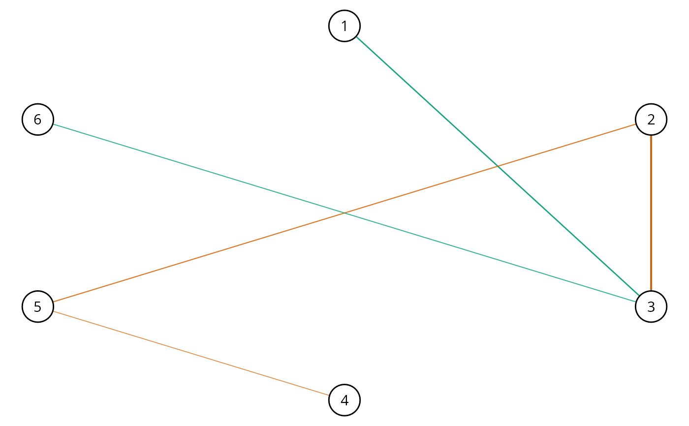

GGM: Exploratory Hypothesis Testing
explore.RdLearn the conditional (in)dependence structure with the Bayes factor using the matrix-F
prior distribution (Mulder and Pericchi 2018)
. These methods were introduced in
Williams and Mulder (2019)
. The graph is selected with select.explore and
then plotted with plot.select.
explore( Y, formula = NULL, type = "continuous", mixed_type = NULL, analytic = FALSE, prior_sd = 0.25, iter = 5000, progress = TRUE, seed = 1, ... )
Arguments
| Y | Matrix (or data frame) of dimensions n (observations) by p (variables). |
|---|---|
| formula | An object of class |
| type | Character string. Which type of data for |
| mixed_type | Numeric vector. An indicator of length p for which varibles should be treated as ranks.
(1 for rank and 0 to assume normality). The default is to treat all integer variables as ranks
when |
| analytic | Logical. Should the analytic solution be computed (default is |
| prior_sd | Scale of the prior distribution, approximately the standard deviation of a beta distribution (defaults to 0.25). |
| iter | Number of iterations (posterior samples; defaults to 5000). |
| progress | Logical. Should a progress bar be included (defaults to |
| seed | An integer for the random seed. |
| ... | Currently ignored (leave empty). |
Value
The returned object of class explore contains a lot of information that
is used for printing and plotting the results. For users of BGGM, the following
are the useful objects:
pcor_matpartial correltion matrix (posterior mean).post_sampan object containing the posterior samples.
Details
Controlling for Variables:
When controlling for variables, it is assumed that Y includes only
the nodes in the GGM and the control variables. Internally, only the predictors
that are included in formula are removed from Y. This is not behavior of, say,
lm, but was adopted to ensure users do not have to write out each variable that
should be included in the GGM. An example is provided below.
Mixed Type:
The term "mixed" is somewhat of a misnomer, because the method can be used for data including only continuous or only discrete variables. This is based on the ranked likelihood which requires sampling the ranks for each variable (i.e., the data is not merely transformed to ranks). This is computationally expensive when there are many levels. For example, with continuous data, there are as many ranks as data points!
The option mixed_type allows the user to determine which variable should be treated as ranks
and the "emprical" distribution is used otherwise. This is accomplished by specifying an indicator
vector of length p. A one indicates to use the ranks, whereas a zero indicates to "ignore"
that variable. By default all integer variables are handled as ranks.
Dealing with Errors:
An error is most likely to arise when type = "ordinal". The are two common errors (although still rare):
The first is due to sampling the thresholds, especially when the data is heavily skewed. This can result in an ill-defined matrix. If this occurs, we recommend to first try decreasing
prior_sd(i.e., a more informative prior). If that does not work, then change the data type totype = mixedwhich then estimates a copula GGM (this method can be used for data containing only ordinal variable). This should work without a problem.The second is due to how the ordinal data are categorized. For example, if the error states that the index is out of bounds, this indicates that the first category is a zero. This is not allowed, as the first category must be one. This is addressed by adding one (e.g.,
Y + 1) to the data matrix.
Note
Posterior Uncertainty:
A key feature of BGGM is that there is a posterior distribution for each partial correlation.
This readily allows for visiualizing uncertainty in the estimates. This feature works
with all data types and is accomplished by plotting the summary of the explore object
(i.e., plot(summary(fit))). Note that in contrast to estimate (credible intervals),
the posterior standard deviation is plotted for explore objects.
"Default" Prior:
In Bayesian statistics, a default Bayes factor needs to have several properties. I refer interested users to section 2.2 in Dablander et al. (2020) . In Williams and Mulder (2019) , some of these propteries were investigated including model selection consistency. That said, we would not consider this a "default" (or "automatic") Bayes factor and thus we encourage users to perform sensitivity analyses by varying the scale of the prior distribution.
Furthermore, it is important to note there is no "correct" prior and, also, there is no need to entertain the possibility of a "true" model. Rather, the Bayes factor can be interpreted as which hypothesis best (relative to each other) predicts the observed data (Section 3.2 in Kass and Raftery 1995) .
Interpretation of Conditional (In)dependence Models for Latent Data:
See BGGM-package for details about interpreting GGMs based on latent data
(i.e, all data types besides "continuous")
References
Dablander F, Bergh Dvd, Ly A, Wagenmakers E (2020).
“Default Bayes Factors for Testing the (In) equality of Several Population Variances.”
arXiv preprint arXiv:2003.06278.
Kass RE, Raftery AE (1995).
“Bayes Factors.”
Journal of the American Statistical Association, 90(430), 773--795.
Mulder J, Pericchi L (2018).
“The Matrix-F Prior for Estimating and Testing Covariance Matrices.”
Bayesian Analysis, 1--22.
ISSN 19316690, doi: 10.1214/17-BA1092
.
Williams DR, Mulder J (2019).
“Bayesian Hypothesis Testing for Gaussian Graphical Models: Conditional Independence and Order Constraints.”
PsyArXiv.
doi: 10.31234/osf.io/ypxd8
.
Examples
# \donttest{ # note: iter = 250 for demonstrative purposes ######################################### ### example 1: continuous and ordinal ### ######################################### # data Y <- ptsd # continuous # fit model fit <- explore(Y, type = "continuous", iter = 250)#>#>#>#> BGGM: Bayesian Gaussian Graphical Models #> --- #> Type: continuous #> Analytic: FALSE #> Formula: #> Posterior Samples: 250 #> Observations (n): #> Nodes (p): 20 #> Relations: 190 #> --- #> Call: #> explore(Y = Y, type = "continuous", iter = 250) #> --- #> Estimates: #> Relation Post.mean Post.sd #> B1--B2 0.186 0.073 #> B1--B3 0.016 0.077 #> B2--B3 0.400 0.059 #> B1--B4 0.322 0.069 #> B2--B4 -0.031 0.073 #> B3--B4 0.262 0.068 #> B1--B5 0.144 0.068 #> B2--B5 0.034 0.070 #> B3--B5 0.113 0.070 #> B4--B5 0.213 0.070 #> B1--C1 -0.040 0.076 #> B2--C1 -0.020 0.075 #> B3--C1 -0.042 0.070 #> B4--C1 0.130 0.071 #> B5--C1 0.188 0.072 #> B1--C2 -0.051 0.070 #> B2--C2 0.094 0.071 #> B3--C2 -0.004 0.068 #> B4--C2 0.158 0.072 #> B5--C2 0.139 0.076 #> C1--C2 0.197 0.070 #> B1--D1 0.057 0.076 #> B2--D1 -0.008 0.073 #> B3--D1 -0.018 0.075 #> B4--D1 -0.021 0.074 #> B5--D1 -0.075 0.073 #> C1--D1 0.107 0.064 #> C2--D1 0.077 0.070 #> B1--D2 -0.048 0.068 #> B2--D2 -0.096 0.066 #> B3--D2 -0.114 0.066 #> B4--D2 0.179 0.071 #> B5--D2 -0.054 0.077 #> C1--D2 -0.129 0.069 #> C2--D2 -0.034 0.081 #> D1--D2 0.059 0.077 #> B1--D3 -0.071 0.076 #> B2--D3 0.043 0.070 #> B3--D3 0.019 0.067 #> B4--D3 0.080 0.069 #> B5--D3 0.075 0.071 #> C1--D3 0.095 0.071 #> C2--D3 0.003 0.076 #> D1--D3 0.097 0.073 #> D2--D3 0.093 0.074 #> B1--D4 0.205 0.066 #> B2--D4 0.058 0.071 #> B3--D4 0.024 0.072 #> B4--D4 0.058 0.074 #> B5--D4 -0.007 0.068 #> C1--D4 -0.064 0.069 #> C2--D4 0.004 0.073 #> D1--D4 0.011 0.076 #> D2--D4 0.224 0.067 #> D3--D4 0.484 0.057 #> B1--D5 0.094 0.065 #> B2--D5 0.085 0.074 #> B3--D5 0.116 0.071 #> B4--D5 -0.116 0.071 #> B5--D5 -0.020 0.071 #> C1--D5 -0.002 0.074 #> C2--D5 0.194 0.061 #> D1--D5 -0.016 0.071 #> D2--D5 0.206 0.068 #> D3--D5 -0.136 0.072 #> D4--D5 0.041 0.074 #> B1--D6 0.062 0.070 #> B2--D6 0.054 0.074 #> B3--D6 -0.059 0.066 #> B4--D6 -0.085 0.071 #> B5--D6 -0.049 0.072 #> C1--D6 0.082 0.074 #> C2--D6 -0.005 0.081 #> D1--D6 0.002 0.073 #> D2--D6 0.073 0.074 #> D3--D6 -0.003 0.079 #> D4--D6 0.059 0.074 #> D5--D6 0.116 0.070 #> B1--D7 0.030 0.073 #> B2--D7 -0.100 0.075 #> B3--D7 0.105 0.067 #> B4--D7 -0.112 0.069 #> B5--D7 -0.023 0.076 #> C1--D7 0.031 0.070 #> C2--D7 0.084 0.075 #> D1--D7 -0.053 0.074 #> D2--D7 0.150 0.070 #> D3--D7 -0.056 0.071 #> D4--D7 -0.042 0.067 #> D5--D7 0.076 0.069 #> D6--D7 0.452 0.054 #> B1--E1 0.047 0.072 #> B2--E1 -0.079 0.078 #> B3--E1 0.017 0.072 #> B4--E1 0.005 0.074 #> B5--E1 0.189 0.069 #> C1--E1 -0.033 0.077 #> C2--E1 0.121 0.068 #> D1--E1 0.038 0.070 #> D2--E1 0.118 0.066 #> D3--E1 -0.077 0.074 #> D4--E1 0.173 0.073 #> D5--E1 0.039 0.076 #> D6--E1 0.007 0.075 #> D7--E1 0.145 0.078 #> B1--E2 -0.013 0.070 #> B2--E2 0.162 0.072 #> B3--E2 0.001 0.066 #> B4--E2 -0.056 0.068 #> B5--E2 -0.042 0.071 #> C1--E2 0.001 0.078 #> C2--E2 0.045 0.070 #> D1--E2 0.115 0.068 #> D2--E2 -0.041 0.072 #> D3--E2 0.131 0.072 #> D4--E2 -0.039 0.071 #> D5--E2 0.001 0.073 #> D6--E2 0.056 0.072 #> D7--E2 0.065 0.076 #> E1--E2 0.258 0.069 #> B1--E3 -0.029 0.078 #> B2--E3 -0.026 0.063 #> B3--E3 0.114 0.072 #> B4--E3 -0.001 0.072 #> B5--E3 -0.056 0.074 #> C1--E3 0.121 0.067 #> C2--E3 0.020 0.069 #> D1--E3 0.096 0.071 #> D2--E3 0.112 0.073 #> D3--E3 -0.046 0.068 #> D4--E3 0.025 0.072 #> D5--E3 0.000 0.071 #> D6--E3 0.058 0.082 #> D7--E3 0.016 0.071 #> E1--E3 -0.007 0.068 #> E2--E3 0.055 0.069 #> B1--E4 -0.156 0.070 #> B2--E4 0.116 0.067 #> B3--E4 0.047 0.078 #> B4--E4 0.037 0.079 #> B5--E4 0.189 0.070 #> C1--E4 -0.040 0.075 #> C2--E4 0.043 0.075 #> D1--E4 -0.031 0.080 #> D2--E4 -0.016 0.069 #> D3--E4 -0.136 0.072 #> D4--E4 0.074 0.072 #> D5--E4 0.009 0.074 #> D6--E4 0.146 0.074 #> D7--E4 -0.105 0.072 #> E1--E4 0.022 0.070 #> E2--E4 0.132 0.078 #> E3--E4 0.314 0.066 #> B1--E5 0.036 0.068 #> B2--E5 -0.080 0.079 #> B3--E5 0.065 0.073 #> B4--E5 -0.053 0.070 #> B5--E5 0.037 0.078 #> C1--E5 -0.014 0.069 #> C2--E5 -0.161 0.067 #> D1--E5 0.142 0.072 #> D2--E5 0.041 0.071 #> D3--E5 0.112 0.071 #> D4--E5 0.004 0.074 #> D5--E5 0.300 0.069 #> D6--E5 0.135 0.070 #> D7--E5 0.053 0.077 #> E1--E5 0.017 0.068 #> E2--E5 -0.050 0.069 #> E3--E5 -0.038 0.074 #> E4--E5 0.158 0.073 #> B1--E6 0.053 0.077 #> B2--E6 0.145 0.068 #> B3--E6 0.049 0.069 #> B4--E6 -0.002 0.074 #> B5--E6 0.076 0.069 #> C1--E6 -0.022 0.070 #> C2--E6 -0.064 0.073 #> D1--E6 -0.034 0.069 #> D2--E6 -0.020 0.075 #> D3--E6 0.031 0.066 #> D4--E6 -0.055 0.074 #> D5--E6 0.015 0.070 #> D6--E6 0.107 0.071 #> D7--E6 0.055 0.069 #> E1--E6 0.019 0.069 #> E2--E6 -0.065 0.067 #> E3--E6 0.056 0.072 #> E4--E6 0.107 0.076 #> E5--E6 0.197 0.073 #> ---#> BGGM: Bayesian Gaussian Graphical Models #> --- #> Type: continuous #> Analytic: FALSE #> Formula: #> Alternative: two.sided #> Bayes Factor: 3 #> --- #> Call: #> select.explore(object = fit) #> --- #> Hypotheses: #> H0: rho = 0 #> H1: rho != 0 #> --- #> Partial Correlations: #> #> 1 2 3 4 5 6 7 8 9 10 11 12 13 14 15 #> 1 0.00 0.19 0.00 0.32 0.00 0.00 0.00 0 0.00 0.00 0.20 0.00 0.00 0.00 0.00 #> 2 0.19 0.00 0.40 0.00 0.00 0.00 0.00 0 0.00 0.00 0.00 0.00 0.00 0.00 0.00 #> 3 0.00 0.40 0.00 0.26 0.00 0.00 0.00 0 0.00 0.00 0.00 0.00 0.00 0.00 0.00 #> 4 0.32 0.00 0.26 0.00 0.21 0.00 0.16 0 0.18 0.00 0.00 0.00 0.00 0.00 0.00 #> 5 0.00 0.00 0.00 0.21 0.00 0.19 0.00 0 0.00 0.00 0.00 0.00 0.00 0.00 0.19 #> 6 0.00 0.00 0.00 0.00 0.19 0.00 0.20 0 0.00 0.00 0.00 0.00 0.00 0.00 0.00 #> 7 0.00 0.00 0.00 0.16 0.00 0.20 0.00 0 0.00 0.00 0.00 0.19 0.00 0.00 0.00 #> 8 0.00 0.00 0.00 0.00 0.00 0.00 0.00 0 0.00 0.00 0.00 0.00 0.00 0.00 0.00 #> 9 0.00 0.00 0.00 0.18 0.00 0.00 0.00 0 0.00 0.00 0.22 0.21 0.00 0.15 0.00 #> 10 0.00 0.00 0.00 0.00 0.00 0.00 0.00 0 0.00 0.00 0.48 0.00 0.00 0.00 0.00 #> 11 0.20 0.00 0.00 0.00 0.00 0.00 0.00 0 0.22 0.48 0.00 0.00 0.00 0.00 0.17 #> 12 0.00 0.00 0.00 0.00 0.00 0.00 0.19 0 0.21 0.00 0.00 0.00 0.00 0.00 0.00 #> 13 0.00 0.00 0.00 0.00 0.00 0.00 0.00 0 0.00 0.00 0.00 0.00 0.00 0.45 0.00 #> 14 0.00 0.00 0.00 0.00 0.00 0.00 0.00 0 0.15 0.00 0.00 0.00 0.45 0.00 0.00 #> 15 0.00 0.00 0.00 0.00 0.19 0.00 0.00 0 0.00 0.00 0.17 0.00 0.00 0.00 0.00 #> 16 0.00 0.16 0.00 0.00 0.00 0.00 0.00 0 0.00 0.00 0.00 0.00 0.00 0.00 0.26 #> 17 0.00 0.00 0.00 0.00 0.00 0.00 0.00 0 0.00 0.00 0.00 0.00 0.00 0.00 0.00 #> 18 -0.16 0.00 0.00 0.00 0.19 0.00 0.00 0 0.00 0.00 0.00 0.00 0.00 0.00 0.00 #> 19 0.00 0.00 0.00 0.00 0.00 0.00 -0.16 0 0.00 0.00 0.00 0.30 0.00 0.00 0.00 #> 20 0.00 0.14 0.00 0.00 0.00 0.00 0.00 0 0.00 0.00 0.00 0.00 0.00 0.00 0.00 #> 16 17 18 19 20 #> 1 0.00 0.00 -0.16 0.00 0.00 #> 2 0.16 0.00 0.00 0.00 0.14 #> 3 0.00 0.00 0.00 0.00 0.00 #> 4 0.00 0.00 0.00 0.00 0.00 #> 5 0.00 0.00 0.19 0.00 0.00 #> 6 0.00 0.00 0.00 0.00 0.00 #> 7 0.00 0.00 0.00 -0.16 0.00 #> 8 0.00 0.00 0.00 0.00 0.00 #> 9 0.00 0.00 0.00 0.00 0.00 #> 10 0.00 0.00 0.00 0.00 0.00 #> 11 0.00 0.00 0.00 0.00 0.00 #> 12 0.00 0.00 0.00 0.30 0.00 #> 13 0.00 0.00 0.00 0.00 0.00 #> 14 0.00 0.00 0.00 0.00 0.00 #> 15 0.26 0.00 0.00 0.00 0.00 #> 16 0.00 0.00 0.00 0.00 0.00 #> 17 0.00 0.00 0.31 0.00 0.00 #> 18 0.00 0.31 0.00 0.16 0.00 #> 19 0.00 0.00 0.16 0.00 0.20 #> 20 0.00 0.00 0.00 0.20 0.00 #> --- #> Adjacency: #> #> 1 2 3 4 5 6 7 8 9 10 11 12 13 14 15 16 17 18 19 20 #> 1 0 1 0 1 0 0 0 0 0 0 1 0 0 0 0 0 0 1 0 0 #> 2 1 0 1 0 0 0 0 0 0 0 0 0 0 0 0 1 0 0 0 1 #> 3 0 1 0 1 0 0 0 0 0 0 0 0 0 0 0 0 0 0 0 0 #> 4 1 0 1 0 1 0 1 0 1 0 0 0 0 0 0 0 0 0 0 0 #> 5 0 0 0 1 0 1 0 0 0 0 0 0 0 0 1 0 0 1 0 0 #> 6 0 0 0 0 1 0 1 0 0 0 0 0 0 0 0 0 0 0 0 0 #> 7 0 0 0 1 0 1 0 0 0 0 0 1 0 0 0 0 0 0 1 0 #> 8 0 0 0 0 0 0 0 0 0 0 0 0 0 0 0 0 0 0 0 0 #> 9 0 0 0 1 0 0 0 0 0 0 1 1 0 1 0 0 0 0 0 0 #> 10 0 0 0 0 0 0 0 0 0 0 1 0 0 0 0 0 0 0 0 0 #> 11 1 0 0 0 0 0 0 0 1 1 0 0 0 0 1 0 0 0 0 0 #> 12 0 0 0 0 0 0 1 0 1 0 0 0 0 0 0 0 0 0 1 0 #> 13 0 0 0 0 0 0 0 0 0 0 0 0 0 1 0 0 0 0 0 0 #> 14 0 0 0 0 0 0 0 0 1 0 0 0 1 0 0 0 0 0 0 0 #> 15 0 0 0 0 1 0 0 0 0 0 1 0 0 0 0 1 0 0 0 0 #> 16 0 1 0 0 0 0 0 0 0 0 0 0 0 0 1 0 0 0 0 0 #> 17 0 0 0 0 0 0 0 0 0 0 0 0 0 0 0 0 0 1 0 0 #> 18 1 0 0 0 1 0 0 0 0 0 0 0 0 0 0 0 1 0 1 0 #> 19 0 0 0 0 0 0 1 0 0 0 0 1 0 0 0 0 0 1 0 1 #> 20 0 1 0 0 0 0 0 0 0 0 0 0 0 0 0 0 0 0 1 0 #> ---#> $plt_alt#> #> $plt_null#> #> $plt_ambiguous#># ordinal # fit model (note + 1, due to zeros) fit <- explore(Y + 1, type = "ordinal", iter = 250)#>#>#>#> BGGM: Bayesian Gaussian Graphical Models #> --- #> Type: ordinal #> Analytic: FALSE #> Formula: #> Posterior Samples: 250 #> Observations (n): #> Nodes (p): 20 #> Relations: 190 #> --- #> Call: #> explore(Y = Y + 1, type = "ordinal", iter = 250) #> --- #> Estimates: #> Relation Post.mean Post.sd #> B1--B2 0.218 0.071 #> B1--B3 0.014 0.081 #> B2--B3 0.389 0.077 #> B1--B4 0.328 0.066 #> B2--B4 -0.033 0.081 #> B3--B4 0.280 0.081 #> B1--B5 0.115 0.076 #> B2--B5 0.031 0.080 #> B3--B5 0.141 0.081 #> B4--B5 0.243 0.076 #> B1--C1 -0.031 0.070 #> B2--C1 -0.021 0.071 #> B3--C1 -0.064 0.074 #> B4--C1 0.130 0.066 #> B5--C1 0.203 0.078 #> B1--C2 -0.048 0.064 #> B2--C2 0.095 0.066 #> B3--C2 -0.019 0.074 #> B4--C2 0.180 0.066 #> B5--C2 0.124 0.065 #> C1--C2 0.205 0.066 #> B1--D1 0.065 0.076 #> B2--D1 0.004 0.081 #> B3--D1 -0.015 0.083 #> B4--D1 -0.054 0.075 #> B5--D1 -0.073 0.081 #> C1--D1 0.139 0.073 #> C2--D1 0.099 0.075 #> B1--D2 -0.053 0.073 #> B2--D2 -0.122 0.081 #> B3--D2 -0.166 0.081 #> B4--D2 0.215 0.072 #> B5--D2 -0.084 0.074 #> C1--D2 -0.149 0.080 #> C2--D2 -0.032 0.077 #> D1--D2 0.033 0.069 #> B1--D3 -0.077 0.080 #> B2--D3 0.030 0.073 #> B3--D3 0.027 0.084 #> B4--D3 0.088 0.079 #> B5--D3 0.084 0.074 #> C1--D3 0.082 0.071 #> C2--D3 0.006 0.076 #> D1--D3 0.101 0.074 #> D2--D3 0.106 0.076 #> B1--D4 0.215 0.069 #> B2--D4 0.066 0.083 #> B3--D4 0.042 0.081 #> B4--D4 0.038 0.083 #> B5--D4 0.012 0.072 #> C1--D4 -0.042 0.079 #> C2--D4 0.000 0.068 #> D1--D4 0.012 0.079 #> D2--D4 0.265 0.068 #> D3--D4 0.494 0.060 #> B1--D5 0.091 0.076 #> B2--D5 0.108 0.077 #> B3--D5 0.131 0.082 #> B4--D5 -0.130 0.075 #> B5--D5 -0.009 0.073 #> C1--D5 -0.018 0.065 #> C2--D5 0.239 0.063 #> D1--D5 -0.020 0.072 #> D2--D5 0.254 0.064 #> D3--D5 -0.115 0.078 #> D4--D5 0.013 0.077 #> B1--D6 0.075 0.078 #> B2--D6 0.019 0.079 #> B3--D6 -0.114 0.083 #> B4--D6 -0.043 0.076 #> B5--D6 -0.081 0.075 #> C1--D6 0.097 0.066 #> C2--D6 0.006 0.072 #> D1--D6 -0.024 0.065 #> D2--D6 0.065 0.081 #> D3--D6 -0.010 0.078 #> D4--D6 0.073 0.074 #> D5--D6 0.122 0.079 #> B1--D7 0.029 0.083 #> B2--D7 -0.070 0.084 #> B3--D7 0.144 0.081 #> B4--D7 -0.166 0.075 #> B5--D7 -0.001 0.072 #> C1--D7 0.022 0.062 #> C2--D7 0.096 0.068 #> D1--D7 -0.067 0.067 #> D2--D7 0.165 0.068 #> D3--D7 -0.037 0.084 #> D4--D7 -0.060 0.069 #> D5--D7 0.052 0.075 #> D6--D7 0.478 0.058 #> B1--E1 0.062 0.073 #> B2--E1 -0.117 0.078 #> B3--E1 -0.008 0.082 #> B4--E1 0.003 0.073 #> B5--E1 0.207 0.073 #> C1--E1 -0.043 0.073 #> C2--E1 0.097 0.077 #> D1--E1 0.079 0.073 #> D2--E1 0.138 0.072 #> D3--E1 -0.125 0.071 #> D4--E1 0.182 0.068 #> D5--E1 0.038 0.076 #> D6--E1 -0.016 0.081 #> D7--E1 0.127 0.073 #> B1--E2 -0.100 0.082 #> B2--E2 0.216 0.079 #> B3--E2 0.014 0.099 #> B4--E2 -0.071 0.087 #> B5--E2 -0.077 0.101 #> C1--E2 -0.017 0.084 #> C2--E2 0.028 0.084 #> D1--E2 0.121 0.075 #> D2--E2 -0.077 0.086 #> D3--E2 0.143 0.080 #> D4--E2 0.010 0.076 #> D5--E2 -0.007 0.087 #> D6--E2 0.102 0.093 #> D7--E2 0.046 0.082 #> E1--E2 0.319 0.071 #> B1--E3 -0.051 0.064 #> B2--E3 -0.014 0.073 #> B3--E3 0.134 0.080 #> B4--E3 0.003 0.073 #> B5--E3 -0.033 0.072 #> C1--E3 0.120 0.064 #> C2--E3 -0.009 0.073 #> D1--E3 0.134 0.073 #> D2--E3 0.120 0.065 #> D3--E3 -0.078 0.073 #> D4--E3 0.030 0.069 #> D5--E3 -0.030 0.066 #> D6--E3 0.077 0.067 #> D7--E3 0.034 0.068 #> E1--E3 -0.011 0.072 #> E2--E3 0.051 0.083 #> B1--E4 -0.150 0.065 #> B2--E4 0.118 0.074 #> B3--E4 0.074 0.082 #> B4--E4 0.001 0.079 #> B5--E4 0.191 0.074 #> C1--E4 -0.030 0.074 #> C2--E4 0.040 0.065 #> D1--E4 -0.091 0.078 #> D2--E4 0.009 0.073 #> D3--E4 -0.133 0.070 #> D4--E4 0.052 0.069 #> D5--E4 0.014 0.076 #> D6--E4 0.191 0.072 #> D7--E4 -0.166 0.072 #> E1--E4 0.018 0.076 #> E2--E4 0.129 0.082 #> E3--E4 0.314 0.067 #> B1--E5 0.058 0.069 #> B2--E5 -0.104 0.076 #> B3--E5 0.070 0.082 #> B4--E5 -0.058 0.073 #> B5--E5 0.018 0.084 #> C1--E5 0.009 0.075 #> C2--E5 -0.231 0.065 #> D1--E5 0.181 0.077 #> D2--E5 0.049 0.079 #> D3--E5 0.087 0.080 #> D4--E5 0.013 0.083 #> D5--E5 0.312 0.065 #> D6--E5 0.134 0.070 #> D7--E5 0.056 0.071 #> E1--E5 0.023 0.073 #> E2--E5 -0.011 0.088 #> E3--E5 -0.064 0.064 #> E4--E5 0.163 0.072 #> B1--E6 0.027 0.071 #> B2--E6 0.161 0.069 #> B3--E6 0.100 0.075 #> B4--E6 0.002 0.071 #> B5--E6 0.083 0.068 #> C1--E6 -0.021 0.065 #> C2--E6 -0.049 0.064 #> D1--E6 -0.001 0.068 #> D2--E6 -0.006 0.079 #> D3--E6 0.026 0.069 #> D4--E6 -0.081 0.072 #> D5--E6 -0.003 0.067 #> D6--E6 0.139 0.065 #> D7--E6 0.058 0.073 #> E1--E6 0.026 0.077 #> E2--E6 -0.082 0.088 #> E3--E6 0.045 0.071 #> E4--E6 0.080 0.070 #> E5--E6 0.205 0.062 #> ---#> BGGM: Bayesian Gaussian Graphical Models #> --- #> Type: ordinal #> Analytic: FALSE #> Formula: ~ 1 #> Alternative: two.sided #> Bayes Factor: 3 #> --- #> Call: #> select.explore(object = fit) #> --- #> Hypotheses: #> H0: rho = 0 #> H1: rho != 0 #> --- #> Partial Correlations: #> #> 1 2 3 4 5 6 7 8 9 10 11 12 13 14 #> 1 0.00 0.22 0.00 0.33 0.00 0.0 0.00 0.00 0.00 0.00 0.22 0.00 0.00 0.00 #> 2 0.22 0.00 0.39 0.00 0.00 0.0 0.00 0.00 0.00 0.00 0.00 0.00 0.00 0.00 #> 3 0.00 0.39 0.00 0.28 0.00 0.0 0.00 0.00 -0.17 0.00 0.00 0.00 0.00 0.00 #> 4 0.33 0.00 0.28 0.00 0.24 0.0 0.18 0.00 0.22 0.00 0.00 0.00 0.00 -0.17 #> 5 0.00 0.00 0.00 0.24 0.00 0.2 0.00 0.00 0.00 0.00 0.00 0.00 0.00 0.00 #> 6 0.00 0.00 0.00 0.00 0.20 0.0 0.20 0.00 0.00 0.00 0.00 0.00 0.00 0.00 #> 7 0.00 0.00 0.00 0.18 0.00 0.2 0.00 0.00 0.00 0.00 0.00 0.24 0.00 0.00 #> 8 0.00 0.00 0.00 0.00 0.00 0.0 0.00 0.00 0.00 0.00 0.00 0.00 0.00 0.00 #> 9 0.00 0.00 -0.17 0.22 0.00 0.0 0.00 0.00 0.00 0.00 0.26 0.25 0.00 0.16 #> 10 0.00 0.00 0.00 0.00 0.00 0.0 0.00 0.00 0.00 0.00 0.49 0.00 0.00 0.00 #> 11 0.22 0.00 0.00 0.00 0.00 0.0 0.00 0.00 0.26 0.49 0.00 0.00 0.00 0.00 #> 12 0.00 0.00 0.00 0.00 0.00 0.0 0.24 0.00 0.25 0.00 0.00 0.00 0.00 0.00 #> 13 0.00 0.00 0.00 0.00 0.00 0.0 0.00 0.00 0.00 0.00 0.00 0.00 0.00 0.48 #> 14 0.00 0.00 0.00 -0.17 0.00 0.0 0.00 0.00 0.16 0.00 0.00 0.00 0.48 0.00 #> 15 0.00 0.00 0.00 0.00 0.21 0.0 0.00 0.00 0.00 0.00 0.18 0.00 0.00 0.00 #> 16 0.00 0.22 0.00 0.00 0.00 0.0 0.00 0.00 0.00 0.00 0.00 0.00 0.00 0.00 #> 17 0.00 0.00 0.00 0.00 0.00 0.0 0.00 0.00 0.00 0.00 0.00 0.00 0.00 0.00 #> 18 -0.15 0.00 0.00 0.00 0.19 0.0 0.00 0.00 0.00 0.00 0.00 0.00 0.19 -0.17 #> 19 0.00 0.00 0.00 0.00 0.00 0.0 -0.23 0.18 0.00 0.00 0.00 0.31 0.00 0.00 #> 20 0.00 0.16 0.00 0.00 0.00 0.0 0.00 0.00 0.00 0.00 0.00 0.00 0.14 0.00 #> 15 16 17 18 19 20 #> 1 0.00 0.00 0.00 -0.15 0.00 0.00 #> 2 0.00 0.22 0.00 0.00 0.00 0.16 #> 3 0.00 0.00 0.00 0.00 0.00 0.00 #> 4 0.00 0.00 0.00 0.00 0.00 0.00 #> 5 0.21 0.00 0.00 0.19 0.00 0.00 #> 6 0.00 0.00 0.00 0.00 0.00 0.00 #> 7 0.00 0.00 0.00 0.00 -0.23 0.00 #> 8 0.00 0.00 0.00 0.00 0.18 0.00 #> 9 0.00 0.00 0.00 0.00 0.00 0.00 #> 10 0.00 0.00 0.00 0.00 0.00 0.00 #> 11 0.18 0.00 0.00 0.00 0.00 0.00 #> 12 0.00 0.00 0.00 0.00 0.31 0.00 #> 13 0.00 0.00 0.00 0.19 0.00 0.14 #> 14 0.00 0.00 0.00 -0.17 0.00 0.00 #> 15 0.00 0.32 0.00 0.00 0.00 0.00 #> 16 0.32 0.00 0.00 0.00 0.00 0.00 #> 17 0.00 0.00 0.00 0.31 0.00 0.00 #> 18 0.00 0.00 0.31 0.00 0.16 0.00 #> 19 0.00 0.00 0.00 0.16 0.00 0.20 #> 20 0.00 0.00 0.00 0.00 0.20 0.00 #> --- #> Adjacency: #> #> 1 2 3 4 5 6 7 8 9 10 11 12 13 14 15 16 17 18 19 20 #> 1 0 1 0 1 0 0 0 0 0 0 1 0 0 0 0 0 0 1 0 0 #> 2 1 0 1 0 0 0 0 0 0 0 0 0 0 0 0 1 0 0 0 1 #> 3 0 1 0 1 0 0 0 0 1 0 0 0 0 0 0 0 0 0 0 0 #> 4 1 0 1 0 1 0 1 0 1 0 0 0 0 1 0 0 0 0 0 0 #> 5 0 0 0 1 0 1 0 0 0 0 0 0 0 0 1 0 0 1 0 0 #> 6 0 0 0 0 1 0 1 0 0 0 0 0 0 0 0 0 0 0 0 0 #> 7 0 0 0 1 0 1 0 0 0 0 0 1 0 0 0 0 0 0 1 0 #> 8 0 0 0 0 0 0 0 0 0 0 0 0 0 0 0 0 0 0 1 0 #> 9 0 0 1 1 0 0 0 0 0 0 1 1 0 1 0 0 0 0 0 0 #> 10 0 0 0 0 0 0 0 0 0 0 1 0 0 0 0 0 0 0 0 0 #> 11 1 0 0 0 0 0 0 0 1 1 0 0 0 0 1 0 0 0 0 0 #> 12 0 0 0 0 0 0 1 0 1 0 0 0 0 0 0 0 0 0 1 0 #> 13 0 0 0 0 0 0 0 0 0 0 0 0 0 1 0 0 0 1 0 1 #> 14 0 0 0 1 0 0 0 0 1 0 0 0 1 0 0 0 0 1 0 0 #> 15 0 0 0 0 1 0 0 0 0 0 1 0 0 0 0 1 0 0 0 0 #> 16 0 1 0 0 0 0 0 0 0 0 0 0 0 0 1 0 0 0 0 0 #> 17 0 0 0 0 0 0 0 0 0 0 0 0 0 0 0 0 0 1 0 0 #> 18 1 0 0 0 1 0 0 0 0 0 0 0 1 1 0 0 1 0 1 0 #> 19 0 0 0 0 0 0 1 1 0 0 0 1 0 0 0 0 0 1 0 1 #> 20 0 1 0 0 0 0 0 0 0 0 0 0 1 0 0 0 0 0 1 0 #> ---#> $plt_alt#> #> $plt_null#> #> $plt_ambiguous#>######################### ### example 2: binary ### ######################### # data Y <- women_math # fit model fit <- explore(Y, type = "binary", iter = 250)#>#>#>#> BGGM: Bayesian Gaussian Graphical Models #> --- #> Type: binary #> Analytic: FALSE #> Formula: #> Posterior Samples: 250 #> Observations (n): #> Nodes (p): 6 #> Relations: 15 #> --- #> Call: #> explore(Y = Y, type = "binary", iter = 250) #> --- #> Estimates: #> Relation Post.mean Post.sd #> 1--2 0.002 0.049 #> 1--3 0.021 0.053 #> 2--3 0.045 0.054 #> 1--4 0.021 0.043 #> 2--4 0.148 0.046 #> 3--4 -0.055 0.057 #> 1--5 0.017 0.048 #> 2--5 -0.241 0.048 #> 3--5 0.138 0.056 #> 4--5 -0.320 0.050 #> 1--6 -0.005 0.056 #> 2--6 -0.009 0.051 #> 3--6 0.383 0.046 #> 4--6 0.208 0.057 #> 5--6 -0.047 0.066 #> ---#> BGGM: Bayesian Gaussian Graphical Models #> --- #> Type: binary #> Analytic: FALSE #> Formula: ~ 1 #> Alternative: two.sided #> Bayes Factor: 3 #> --- #> Call: #> select.explore(object = fit) #> --- #> Hypotheses: #> H0: rho = 0 #> H1: rho != 0 #> --- #> Partial Correlations: #> #> 1 2 3 4 5 6 #> 1 0 0.00 0.00 0.00 0.00 0.00 #> 2 0 0.00 0.00 0.15 -0.24 0.00 #> 3 0 0.00 0.00 0.00 0.14 0.38 #> 4 0 0.15 0.00 0.00 -0.32 0.21 #> 5 0 -0.24 0.14 -0.32 0.00 0.00 #> 6 0 0.00 0.38 0.21 0.00 0.00 #> --- #> Adjacency: #> #> 1 2 3 4 5 6 #> 1 0 0 0 0 0 0 #> 2 0 0 0 1 1 0 #> 3 0 0 0 0 1 1 #> 4 0 1 0 0 1 1 #> 5 0 1 1 1 0 0 #> 6 0 0 1 1 0 0 #> ---#> $plt_alt#> #> $plt_null#> #> $plt_ambiguous#>######################################## ### example 3: control with formula ### ######################################## # (the following works with all data types) # controlling for gender Y <- bfi # Y contains two control variables # (gender and education) # the following is incorrect, as education is # automatically included in Y ! #incorrect <- estimate(Y, formula = ~ gender, # iter = 250) # to control for only gender # (remove education) Y <- subset(Y, select = - education) # fit model fit <- explore(Y, formula = ~ gender, iter = 250)#>#>#>#> BGGM: Bayesian Gaussian Graphical Models #> --- #> Type: continuous #> Analytic: FALSE #> Formula: #> Posterior Samples: 250 #> Observations (n): #> Nodes (p): 25 #> Relations: 300 #> --- #> Call: #> explore(Y = Y, formula = ~gender, iter = 250) #> --- #> Estimates: #> Relation Post.mean Post.sd #> A1--A2 -0.230 0.019 #> A1--A3 -0.127 0.021 #> A2--A3 0.264 0.018 #> A1--A4 -0.021 0.021 #> A2--A4 0.159 0.020 #> A3--A4 0.157 0.020 #> A1--A5 -0.029 0.020 #> A2--A5 0.099 0.020 #> A3--A5 0.257 0.019 #> A4--A5 0.068 0.019 #> A1--C1 0.040 0.020 #> A2--C1 -0.023 0.021 #> A3--C1 0.005 0.019 #> A4--C1 -0.047 0.021 #> A5--C1 0.023 0.022 #> A1--C2 0.048 0.019 #> A2--C2 -0.025 0.020 #> A3--C2 0.017 0.019 #> A4--C2 0.148 0.020 #> A5--C2 -0.029 0.020 #> C1--C2 0.257 0.020 #> A1--C3 0.036 0.020 #> A2--C3 0.117 0.021 #> A3--C3 0.001 0.020 #> A4--C3 -0.036 0.021 #> A5--C3 0.026 0.022 #> C1--C3 0.124 0.020 #> C2--C3 0.162 0.021 #> A1--C4 0.084 0.020 #> A2--C4 -0.014 0.022 #> A3--C4 0.003 0.020 #> A4--C4 -0.018 0.020 #> A5--C4 0.004 0.020 #> C1--C4 -0.152 0.021 #> C2--C4 -0.223 0.019 #> C3--C4 -0.138 0.020 #> A1--C5 -0.026 0.022 #> A2--C5 0.037 0.021 #> A3--C5 -0.007 0.019 #> A4--C5 -0.110 0.021 #> A5--C5 0.021 0.021 #> C1--C5 -0.036 0.021 #> C2--C5 -0.063 0.021 #> C3--C5 -0.173 0.019 #> C4--C5 0.285 0.017 #> A1--E1 0.053 0.019 #> A2--E1 -0.046 0.021 #> A3--E1 0.035 0.020 #> A4--E1 0.008 0.021 #> A5--E1 0.005 0.020 #> C1--E1 0.034 0.020 #> C2--E1 0.093 0.020 #> C3--E1 0.023 0.022 #> C4--E1 0.057 0.021 #> C5--E1 -0.094 0.019 #> A1--E2 0.005 0.021 #> A2--E2 -0.031 0.022 #> A3--E2 -0.026 0.021 #> A4--E2 0.015 0.021 #> A5--E2 -0.011 0.020 #> C1--E2 0.026 0.019 #> C2--E2 0.033 0.020 #> C3--E2 0.023 0.019 #> C4--E2 0.046 0.021 #> C5--E2 0.083 0.020 #> E1--E2 0.249 0.018 #> A1--E3 0.053 0.019 #> A2--E3 -0.023 0.020 #> A3--E3 0.139 0.019 #> A4--E3 -0.001 0.020 #> A5--E3 0.143 0.020 #> C1--E3 -0.033 0.020 #> C2--E3 0.024 0.020 #> C3--E3 -0.008 0.020 #> C4--E3 0.050 0.019 #> C5--E3 -0.053 0.019 #> E1--E3 -0.087 0.020 #> E2--E3 -0.093 0.020 #> A1--E4 0.051 0.021 #> A2--E4 0.023 0.018 #> A3--E4 0.072 0.020 #> A4--E4 0.108 0.019 #> A5--E4 0.219 0.018 #> C1--E4 0.082 0.022 #> C2--E4 0.015 0.021 #> C3--E4 -0.022 0.021 #> C4--E4 0.054 0.021 #> C5--E4 -0.023 0.020 #> E1--E4 -0.180 0.020 #> E2--E4 -0.267 0.019 #> E3--E4 0.113 0.021 #> A1--E5 0.051 0.020 #> A2--E5 0.152 0.021 #> A3--E5 -0.017 0.020 #> A4--E5 -0.020 0.021 #> A5--E5 0.024 0.021 #> C1--E5 0.105 0.020 #> C2--E5 0.090 0.020 #> C3--E5 0.049 0.021 #> C4--E5 -0.038 0.020 #> C5--E5 -0.042 0.021 #> E1--E5 -0.095 0.020 #> E2--E5 -0.135 0.019 #> E3--E5 0.138 0.022 #> E4--E5 0.019 0.020 #> A1--N1 0.056 0.019 #> A2--N1 -0.060 0.019 #> A3--N1 0.042 0.020 #> A4--N1 0.045 0.019 #> A5--N1 -0.068 0.020 #> C1--N1 -0.033 0.020 #> C2--N1 -0.005 0.019 #> C3--N1 -0.004 0.019 #> C4--N1 0.067 0.021 #> C5--N1 -0.035 0.021 #> E1--N1 -0.050 0.021 #> E2--N1 -0.017 0.022 #> E3--N1 0.000 0.023 #> E4--N1 -0.042 0.021 #> E5--N1 0.109 0.021 #> A1--N2 0.054 0.020 #> A2--N2 0.050 0.020 #> A3--N2 -0.006 0.021 #> A4--N2 -0.096 0.021 #> A5--N2 -0.045 0.019 #> C1--N2 0.001 0.021 #> C2--N2 0.008 0.023 #> C3--N2 -0.002 0.021 #> C4--N2 -0.055 0.021 #> C5--N2 0.089 0.021 #> E1--N2 -0.028 0.020 #> E2--N2 0.070 0.021 #> E3--N2 -0.016 0.021 #> E4--N2 0.010 0.021 #> E5--N2 0.083 0.020 #> N1--N2 0.553 0.013 #> A1--N3 0.031 0.020 #> A2--N3 -0.018 0.021 #> A3--N3 0.023 0.022 #> A4--N3 0.028 0.020 #> A5--N3 -0.019 0.020 #> C1--N3 0.050 0.022 #> C2--N3 0.008 0.021 #> C3--N3 -0.013 0.021 #> C4--N3 0.021 0.021 #> C5--N3 0.028 0.019 #> E1--N3 -0.007 0.021 #> E2--N3 -0.019 0.021 #> E3--N3 0.060 0.021 #> E4--N3 0.025 0.021 #> E5--N3 -0.048 0.021 #> N1--N3 0.219 0.020 #> N2--N3 0.183 0.019 #> A1--N4 -0.044 0.021 #> A2--N4 0.038 0.022 #> A3--N4 0.009 0.020 #> A4--N4 -0.041 0.020 #> A5--N4 -0.020 0.020 #> C1--N4 -0.014 0.022 #> C2--N4 0.049 0.019 #> C3--N4 -0.005 0.019 #> C4--N4 0.057 0.019 #> C5--N4 0.146 0.019 #> E1--N4 0.116 0.020 #> E2--N4 0.050 0.020 #> E3--N4 0.003 0.020 #> E4--N4 -0.101 0.020 #> E5--N4 -0.064 0.020 #> N1--N4 0.078 0.019 #> N2--N4 0.032 0.019 #> N3--N4 0.291 0.018 #> A1--N5 -0.016 0.020 #> A2--N5 0.059 0.020 #> A3--N5 -0.040 0.021 #> A4--N5 0.023 0.021 #> A5--N5 0.033 0.019 #> C1--N5 0.008 0.021 #> C2--N5 0.103 0.019 #> C3--N5 0.028 0.021 #> C4--N5 0.081 0.021 #> C5--N5 -0.009 0.020 #> E1--N5 -0.072 0.021 #> E2--N5 0.133 0.020 #> E3--N5 0.001 0.021 #> E4--N5 0.026 0.021 #> E5--N5 -0.102 0.020 #> N1--N5 0.115 0.020 #> N2--N5 0.025 0.019 #> N3--N5 0.149 0.021 #> N4--N5 0.166 0.019 #> A1--O1 0.050 0.020 #> A2--O1 0.018 0.021 #> A3--O1 0.011 0.021 #> A4--O1 -0.001 0.019 #> A5--O1 0.006 0.020 #> C1--O1 0.028 0.022 #> C2--O1 0.042 0.021 #> C3--O1 0.019 0.019 #> C4--O1 0.032 0.020 #> C5--O1 0.000 0.022 #> E1--O1 0.016 0.019 #> E2--O1 0.003 0.020 #> E3--O1 0.146 0.020 #> E4--O1 0.004 0.020 #> E5--O1 0.127 0.020 #> N1--O1 -0.010 0.021 #> N2--O1 -0.010 0.021 #> N3--O1 0.001 0.021 #> N4--O1 0.028 0.021 #> N5--O1 -0.048 0.022 #> A1--O2 0.042 0.020 #> A2--O2 0.043 0.019 #> A3--O2 0.027 0.018 #> A4--O2 0.026 0.020 #> A5--O2 0.022 0.021 #> C1--O2 -0.038 0.021 #> C2--O2 0.042 0.020 #> C3--O2 0.026 0.019 #> C4--O2 0.116 0.020 #> C5--O2 0.044 0.021 #> E1--O2 0.023 0.020 #> E2--O2 0.012 0.020 #> E3--O2 0.020 0.021 #> E4--O2 0.080 0.020 #> E5--O2 0.013 0.021 #> N1--O2 0.013 0.020 #> N2--O2 0.045 0.021 #> N3--O2 -0.007 0.020 #> N4--O2 -0.022 0.021 #> N5--O2 0.082 0.020 #> O1--O2 -0.108 0.020 #> A1--O3 -0.014 0.021 #> A2--O3 -0.008 0.021 #> A3--O3 0.051 0.021 #> A4--O3 -0.040 0.022 #> A5--O3 0.040 0.021 #> C1--O3 0.050 0.020 #> C2--O3 0.112 0.021 #> C3--O3 -0.026 0.020 #> C4--O3 0.081 0.020 #> C5--O3 0.022 0.021 #> E1--O3 -0.066 0.020 #> E2--O3 -0.047 0.023 #> E3--O3 0.190 0.021 #> E4--O3 0.032 0.020 #> E5--O3 0.077 0.022 #> N1--O3 0.015 0.021 #> N2--O3 -0.001 0.021 #> N3--O3 -0.020 0.020 #> N4--O3 0.013 0.022 #> N5--O3 0.015 0.021 #> O1--O3 0.177 0.020 #> O2--O3 -0.188 0.019 #> A1--O4 -0.083 0.019 #> A2--O4 0.063 0.021 #> A3--O4 -0.003 0.020 #> A4--O4 -0.021 0.022 #> A5--O4 0.022 0.020 #> C1--O4 0.086 0.021 #> C2--O4 -0.007 0.022 #> C3--O4 0.023 0.021 #> C4--O4 0.029 0.020 #> C5--O4 0.068 0.021 #> E1--O4 0.058 0.020 #> E2--O4 0.122 0.020 #> E3--O4 0.032 0.021 #> E4--O4 -0.018 0.020 #> E5--O4 -0.011 0.021 #> N1--O4 -0.034 0.020 #> N2--O4 0.040 0.020 #> N3--O4 0.055 0.019 #> N4--O4 0.086 0.021 #> N5--O4 0.024 0.023 #> O1--O4 0.110 0.020 #> O2--O4 -0.004 0.020 #> O3--O4 0.108 0.019 #> A1--O5 0.043 0.019 #> A2--O5 -0.041 0.021 #> A3--O5 0.023 0.021 #> A4--O5 0.025 0.021 #> A5--O5 -0.008 0.020 #> C1--O5 -0.033 0.021 #> C2--O5 0.019 0.020 #> C3--O5 0.067 0.021 #> C4--O5 0.122 0.021 #> C5--O5 -0.008 0.020 #> E1--O5 0.058 0.020 #> E2--O5 0.025 0.021 #> E3--O5 -0.018 0.020 #> E4--O5 0.117 0.020 #> E5--O5 0.011 0.022 #> N1--O5 0.076 0.020 #> N2--O5 -0.067 0.020 #> N3--O5 -0.002 0.021 #> N4--O5 -0.008 0.019 #> N5--O5 0.057 0.021 #> O1--O5 -0.095 0.019 #> O2--O5 0.187 0.019 #> O3--O5 -0.166 0.021 #> O4--O5 -0.113 0.023 #> ---#> BGGM: Bayesian Gaussian Graphical Models #> --- #> Type: continuous #> Analytic: FALSE #> Formula: ~ gender #> Alternative: two.sided #> Bayes Factor: 3 #> --- #> Call: #> select.explore(object = fit) #> --- #> Hypotheses: #> H0: rho = 0 #> H1: rho != 0 #> --- #> Partial Correlations: #> #> 1 2 3 4 5 6 7 8 9 10 11 12 #> 1 0.00 -0.23 -0.13 0.00 0.00 0.00 0.00 0.00 0.08 0.00 0.05 0.00 #> 2 -0.23 0.00 0.26 0.16 0.10 0.00 0.00 0.12 0.00 0.00 0.00 0.00 #> 3 -0.13 0.26 0.00 0.16 0.26 0.00 0.00 0.00 0.00 0.00 0.00 0.00 #> 4 0.00 0.16 0.16 0.00 0.07 0.00 0.15 0.00 0.00 -0.11 0.00 0.00 #> 5 0.00 0.10 0.26 0.07 0.00 0.00 0.00 0.00 0.00 0.00 0.00 0.00 #> 6 0.00 0.00 0.00 0.00 0.00 0.00 0.26 0.12 -0.15 0.00 0.00 0.00 #> 7 0.00 0.00 0.00 0.15 0.00 0.26 0.00 0.16 -0.22 -0.06 0.09 0.00 #> 8 0.00 0.12 0.00 0.00 0.00 0.12 0.16 0.00 -0.14 -0.17 0.00 0.00 #> 9 0.08 0.00 0.00 0.00 0.00 -0.15 -0.22 -0.14 0.00 0.28 0.06 0.00 #> 10 0.00 0.00 0.00 -0.11 0.00 0.00 -0.06 -0.17 0.28 0.00 -0.09 0.08 #> 11 0.05 0.00 0.00 0.00 0.00 0.00 0.09 0.00 0.06 -0.09 0.00 0.25 #> 12 0.00 0.00 0.00 0.00 0.00 0.00 0.00 0.00 0.00 0.08 0.25 0.00 #> 13 0.05 0.00 0.14 0.00 0.14 0.00 0.00 0.00 0.05 -0.05 -0.09 -0.09 #> 14 0.00 0.00 0.07 0.11 0.22 0.08 0.00 0.00 0.05 0.00 -0.18 -0.27 #> 15 0.00 0.15 0.00 0.00 0.00 0.11 0.09 0.00 0.00 0.00 -0.09 -0.13 #> 16 0.06 -0.06 0.00 0.00 -0.07 0.00 0.00 0.00 0.07 0.00 0.00 0.00 #> 17 0.05 0.00 0.00 -0.10 0.00 0.00 0.00 0.00 -0.05 0.09 0.00 0.07 #> 18 0.00 0.00 0.00 0.00 0.00 0.00 0.00 0.00 0.00 0.00 0.00 0.00 #> 19 0.00 0.00 0.00 0.00 0.00 0.00 0.05 0.00 0.06 0.15 0.12 0.00 #> 20 0.00 0.06 0.00 0.00 0.00 0.00 0.10 0.00 0.08 0.00 -0.07 0.13 #> 21 0.00 0.00 0.00 0.00 0.00 0.00 0.00 0.00 0.00 0.00 0.00 0.00 #> 22 0.00 0.00 0.00 0.00 0.00 0.00 0.00 0.00 0.12 0.00 0.00 0.00 #> 23 0.00 0.00 0.00 0.00 0.00 0.00 0.11 0.00 0.08 0.00 -0.07 0.00 #> 24 -0.08 0.06 0.00 0.00 0.00 0.09 0.00 0.00 0.00 0.07 0.06 0.12 #> 25 0.00 0.00 0.00 0.00 0.00 0.00 0.00 0.07 0.12 0.00 0.06 0.00 #> 13 14 15 16 17 18 19 20 21 22 23 24 25 #> 1 0.05 0.00 0.00 0.06 0.05 0.00 0.00 0.00 0.00 0.00 0.00 -0.08 0.00 #> 2 0.00 0.00 0.15 -0.06 0.00 0.00 0.00 0.06 0.00 0.00 0.00 0.06 0.00 #> 3 0.14 0.07 0.00 0.00 0.00 0.00 0.00 0.00 0.00 0.00 0.00 0.00 0.00 #> 4 0.00 0.11 0.00 0.00 -0.10 0.00 0.00 0.00 0.00 0.00 0.00 0.00 0.00 #> 5 0.14 0.22 0.00 -0.07 0.00 0.00 0.00 0.00 0.00 0.00 0.00 0.00 0.00 #> 6 0.00 0.08 0.11 0.00 0.00 0.00 0.00 0.00 0.00 0.00 0.00 0.09 0.00 #> 7 0.00 0.00 0.09 0.00 0.00 0.00 0.05 0.10 0.00 0.00 0.11 0.00 0.00 #> 8 0.00 0.00 0.00 0.00 0.00 0.00 0.00 0.00 0.00 0.00 0.00 0.00 0.07 #> 9 0.05 0.05 0.00 0.07 -0.05 0.00 0.06 0.08 0.00 0.12 0.08 0.00 0.12 #> 10 -0.05 0.00 0.00 0.00 0.09 0.00 0.15 0.00 0.00 0.00 0.00 0.07 0.00 #> 11 -0.09 -0.18 -0.09 0.00 0.00 0.00 0.12 -0.07 0.00 0.00 -0.07 0.06 0.06 #> 12 -0.09 -0.27 -0.13 0.00 0.07 0.00 0.00 0.13 0.00 0.00 0.00 0.12 0.00 #> 13 0.00 0.11 0.14 0.00 0.00 0.06 0.00 0.00 0.15 0.00 0.19 0.00 0.00 #> 14 0.11 0.00 0.00 0.00 0.00 0.00 -0.10 0.00 0.00 0.08 0.00 0.00 0.12 #> 15 0.14 0.00 0.00 0.11 0.08 0.00 -0.06 -0.10 0.13 0.00 0.08 0.00 0.00 #> 16 0.00 0.00 0.11 0.00 0.55 0.22 0.08 0.12 0.00 0.00 0.00 0.00 0.08 #> 17 0.00 0.00 0.08 0.55 0.00 0.18 0.00 0.00 0.00 0.00 0.00 0.00 -0.07 #> 18 0.06 0.00 0.00 0.22 0.18 0.00 0.29 0.15 0.00 0.00 0.00 0.06 0.00 #> 19 0.00 -0.10 -0.06 0.08 0.00 0.29 0.00 0.17 0.00 0.00 0.00 0.09 0.00 #> 20 0.00 0.00 -0.10 0.12 0.00 0.15 0.17 0.00 0.00 0.08 0.00 0.00 0.06 #> 21 0.15 0.00 0.13 0.00 0.00 0.00 0.00 0.00 0.00 -0.11 0.18 0.11 -0.09 #> 22 0.00 0.08 0.00 0.00 0.00 0.00 0.00 0.08 -0.11 0.00 -0.19 0.00 0.19 #> 23 0.19 0.00 0.08 0.00 0.00 0.00 0.00 0.00 0.18 -0.19 0.00 0.11 -0.17 #> 24 0.00 0.00 0.00 0.00 0.00 0.06 0.09 0.00 0.11 0.00 0.11 0.00 -0.11 #> 25 0.00 0.12 0.00 0.08 -0.07 0.00 0.00 0.06 -0.09 0.19 -0.17 -0.11 0.00 #> --- #> Adjacency: #> #> 1 2 3 4 5 6 7 8 9 10 11 12 13 14 15 16 17 18 19 20 21 22 23 24 25 #> 1 0 1 1 0 0 0 0 0 1 0 1 0 1 0 0 1 1 0 0 0 0 0 0 1 0 #> 2 1 0 1 1 1 0 0 1 0 0 0 0 0 0 1 1 0 0 0 1 0 0 0 1 0 #> 3 1 1 0 1 1 0 0 0 0 0 0 0 1 1 0 0 0 0 0 0 0 0 0 0 0 #> 4 0 1 1 0 1 0 1 0 0 1 0 0 0 1 0 0 1 0 0 0 0 0 0 0 0 #> 5 0 1 1 1 0 0 0 0 0 0 0 0 1 1 0 1 0 0 0 0 0 0 0 0 0 #> 6 0 0 0 0 0 0 1 1 1 0 0 0 0 1 1 0 0 0 0 0 0 0 0 1 0 #> 7 0 0 0 1 0 1 0 1 1 1 1 0 0 0 1 0 0 0 1 1 0 0 1 0 0 #> 8 0 1 0 0 0 1 1 0 1 1 0 0 0 0 0 0 0 0 0 0 0 0 0 0 1 #> 9 1 0 0 0 0 1 1 1 0 1 1 0 1 1 0 1 1 0 1 1 0 1 1 0 1 #> 10 0 0 0 1 0 0 1 1 1 0 1 1 1 0 0 0 1 0 1 0 0 0 0 1 0 #> 11 1 0 0 0 0 0 1 0 1 1 0 1 1 1 1 0 0 0 1 1 0 0 1 1 1 #> 12 0 0 0 0 0 0 0 0 0 1 1 0 1 1 1 0 1 0 0 1 0 0 0 1 0 #> 13 1 0 1 0 1 0 0 0 1 1 1 1 0 1 1 0 0 1 0 0 1 0 1 0 0 #> 14 0 0 1 1 1 1 0 0 1 0 1 1 1 0 0 0 0 0 1 0 0 1 0 0 1 #> 15 0 1 0 0 0 1 1 0 0 0 1 1 1 0 0 1 1 0 1 1 1 0 1 0 0 #> 16 1 1 0 0 1 0 0 0 1 0 0 0 0 0 1 0 1 1 1 1 0 0 0 0 1 #> 17 1 0 0 1 0 0 0 0 1 1 0 1 0 0 1 1 0 1 0 0 0 0 0 0 1 #> 18 0 0 0 0 0 0 0 0 0 0 0 0 1 0 0 1 1 0 1 1 0 0 0 1 0 #> 19 0 0 0 0 0 0 1 0 1 1 1 0 0 1 1 1 0 1 0 1 0 0 0 1 0 #> 20 0 1 0 0 0 0 1 0 1 0 1 1 0 0 1 1 0 1 1 0 0 1 0 0 1 #> 21 0 0 0 0 0 0 0 0 0 0 0 0 1 0 1 0 0 0 0 0 0 1 1 1 1 #> 22 0 0 0 0 0 0 0 0 1 0 0 0 0 1 0 0 0 0 0 1 1 0 1 0 1 #> 23 0 0 0 0 0 0 1 0 1 0 1 0 1 0 1 0 0 0 0 0 1 1 0 1 1 #> 24 1 1 0 0 0 1 0 0 0 1 1 1 0 0 0 0 0 1 1 0 1 0 1 0 1 #> 25 0 0 0 0 0 0 0 1 1 0 1 0 0 1 0 1 1 0 0 1 1 1 1 1 0 #> ---#> $plt_alt#> #> $plt_null#> #> $plt_ambiguous#># control for an intercation (for some reason ?) # (gender by education) # data Y <- bfi # fit model fit <- explore(Y, formula = ~ gender * education, iter = 250)#>#>#>#> BGGM: Bayesian Gaussian Graphical Models #> --- #> Type: continuous #> Analytic: FALSE #> Formula: #> Posterior Samples: 250 #> Observations (n): #> Nodes (p): 25 #> Relations: 300 #> --- #> Call: #> explore(Y = Y, formula = ~gender * education, iter = 250) #> --- #> Estimates: #> Relation Post.mean Post.sd #> A1--A2 -0.229 0.022 #> A1--A3 -0.132 0.020 #> A2--A3 0.241 0.019 #> A1--A4 -0.017 0.023 #> A2--A4 0.157 0.021 #> A3--A4 0.159 0.021 #> A1--A5 -0.034 0.022 #> A2--A5 0.101 0.020 #> A3--A5 0.246 0.019 #> A4--A5 0.063 0.022 #> A1--C1 0.040 0.022 #> A2--C1 -0.025 0.021 #> A3--C1 -0.004 0.022 #> A4--C1 -0.042 0.020 #> A5--C1 0.027 0.021 #> A1--C2 0.038 0.021 #> A2--C2 -0.022 0.023 #> A3--C2 0.019 0.022 #> A4--C2 0.146 0.022 #> A5--C2 -0.030 0.021 #> C1--C2 0.251 0.021 #> A1--C3 0.049 0.021 #> A2--C3 0.119 0.021 #> A3--C3 0.015 0.021 #> A4--C3 -0.030 0.021 #> A5--C3 0.024 0.023 #> C1--C3 0.136 0.020 #> C2--C3 0.154 0.021 #> A1--C4 0.071 0.019 #> A2--C4 -0.022 0.022 #> A3--C4 -0.003 0.023 #> A4--C4 -0.012 0.020 #> A5--C4 0.008 0.020 #> C1--C4 -0.147 0.020 #> C2--C4 -0.222 0.020 #> C3--C4 -0.132 0.021 #> A1--C5 -0.019 0.020 #> A2--C5 0.046 0.021 #> A3--C5 0.005 0.020 #> A4--C5 -0.112 0.020 #> A5--C5 0.012 0.021 #> C1--C5 -0.029 0.023 #> C2--C5 -0.066 0.023 #> C3--C5 -0.181 0.021 #> C4--C5 0.284 0.020 #> A1--E1 0.063 0.020 #> A2--E1 -0.053 0.023 #> A3--E1 0.034 0.021 #> A4--E1 0.002 0.021 #> A5--E1 0.011 0.020 #> C1--E1 0.031 0.021 #> C2--E1 0.100 0.022 #> C3--E1 0.008 0.022 #> C4--E1 0.053 0.020 #> C5--E1 -0.094 0.021 #> A1--E2 0.006 0.021 #> A2--E2 -0.025 0.022 #> A3--E2 -0.020 0.022 #> A4--E2 0.014 0.022 #> A5--E2 -0.006 0.021 #> C1--E2 0.025 0.020 #> C2--E2 0.037 0.020 #> C3--E2 0.035 0.021 #> C4--E2 0.053 0.022 #> C5--E2 0.076 0.021 #> E1--E2 0.245 0.021 #> A1--E3 0.051 0.022 #> A2--E3 -0.028 0.022 #> A3--E3 0.131 0.022 #> A4--E3 0.005 0.022 #> A5--E3 0.152 0.022 #> C1--E3 -0.034 0.020 #> C2--E3 0.032 0.020 #> C3--E3 0.001 0.022 #> C4--E3 0.057 0.021 #> C5--E3 -0.059 0.024 #> E1--E3 -0.099 0.022 #> E2--E3 -0.105 0.021 #> A1--E4 0.057 0.020 #> A2--E4 0.025 0.020 #> A3--E4 0.080 0.022 #> A4--E4 0.123 0.022 #> A5--E4 0.219 0.022 #> C1--E4 0.082 0.021 #> C2--E4 0.015 0.022 #> C3--E4 -0.027 0.022 #> C4--E4 0.048 0.022 #> C5--E4 -0.016 0.023 #> E1--E4 -0.175 0.021 #> E2--E4 -0.262 0.022 #> E3--E4 0.118 0.021 #> A1--E5 0.062 0.022 #> A2--E5 0.156 0.021 #> A3--E5 -0.004 0.020 #> A4--E5 -0.029 0.021 #> A5--E5 0.024 0.023 #> C1--E5 0.101 0.022 #> C2--E5 0.082 0.020 #> C3--E5 0.053 0.019 #> C4--E5 -0.030 0.020 #> C5--E5 -0.054 0.020 #> E1--E5 -0.083 0.019 #> E2--E5 -0.134 0.022 #> E3--E5 0.138 0.020 #> E4--E5 0.036 0.022 #> A1--N1 0.054 0.021 #> A2--N1 -0.059 0.020 #> A3--N1 0.050 0.021 #> A4--N1 0.043 0.022 #> A5--N1 -0.064 0.022 #> C1--N1 -0.026 0.020 #> C2--N1 -0.011 0.021 #> C3--N1 -0.012 0.023 #> C4--N1 0.063 0.023 #> C5--N1 -0.039 0.021 #> E1--N1 -0.050 0.022 #> E2--N1 -0.023 0.022 #> E3--N1 -0.002 0.023 #> E4--N1 -0.054 0.023 #> E5--N1 0.109 0.021 #> A1--N2 0.049 0.022 #> A2--N2 0.043 0.021 #> A3--N2 -0.016 0.022 #> A4--N2 -0.089 0.022 #> A5--N2 -0.048 0.022 #> C1--N2 0.002 0.020 #> C2--N2 0.012 0.020 #> C3--N2 0.004 0.021 #> C4--N2 -0.055 0.022 #> C5--N2 0.095 0.023 #> E1--N2 -0.037 0.021 #> E2--N2 0.070 0.022 #> E3--N2 -0.015 0.021 #> E4--N2 0.008 0.022 #> E5--N2 0.093 0.022 #> N1--N2 0.540 0.015 #> A1--N3 0.035 0.021 #> A2--N3 0.003 0.021 #> A3--N3 0.031 0.021 #> A4--N3 0.017 0.021 #> A5--N3 -0.020 0.023 #> C1--N3 0.057 0.019 #> C2--N3 0.002 0.021 #> C3--N3 -0.009 0.021 #> C4--N3 0.012 0.021 #> C5--N3 0.029 0.023 #> E1--N3 -0.002 0.022 #> E2--N3 -0.017 0.021 #> E3--N3 0.069 0.021 #> E4--N3 0.014 0.023 #> E5--N3 -0.048 0.020 #> N1--N3 0.221 0.020 #> N2--N3 0.187 0.021 #> A1--N4 -0.030 0.021 #> A2--N4 0.041 0.022 #> A3--N4 -0.005 0.021 #> A4--N4 -0.027 0.023 #> A5--N4 -0.013 0.022 #> C1--N4 -0.011 0.021 #> C2--N4 0.058 0.022 #> C3--N4 -0.014 0.022 #> C4--N4 0.067 0.021 #> C5--N4 0.137 0.020 #> E1--N4 0.115 0.021 #> E2--N4 0.055 0.021 #> E3--N4 0.011 0.022 #> E4--N4 -0.102 0.021 #> E5--N4 -0.069 0.021 #> N1--N4 0.082 0.022 #> N2--N4 0.027 0.021 #> N3--N4 0.289 0.021 #> A1--N5 -0.029 0.023 #> A2--N5 0.045 0.022 #> A3--N5 -0.047 0.022 #> A4--N5 0.033 0.022 #> A5--N5 0.029 0.022 #> C1--N5 0.005 0.022 #> C2--N5 0.104 0.022 #> C3--N5 0.030 0.023 #> C4--N5 0.093 0.023 #> C5--N5 0.000 0.023 #> E1--N5 -0.070 0.021 #> E2--N5 0.136 0.022 #> E3--N5 -0.009 0.023 #> E4--N5 0.037 0.019 #> E5--N5 -0.088 0.022 #> N1--N5 0.117 0.020 #> N2--N5 0.031 0.022 #> N3--N5 0.146 0.020 #> N4--N5 0.162 0.020 #> A1--O1 0.039 0.022 #> A2--O1 0.015 0.020 #> A3--O1 0.015 0.022 #> A4--O1 0.000 0.022 #> A5--O1 -0.004 0.023 #> C1--O1 0.034 0.021 #> C2--O1 0.043 0.022 #> C3--O1 0.011 0.021 #> C4--O1 0.023 0.022 #> C5--O1 0.005 0.023 #> E1--O1 0.020 0.020 #> E2--O1 -0.001 0.020 #> E3--O1 0.146 0.021 #> E4--O1 -0.013 0.022 #> E5--O1 0.137 0.022 #> N1--O1 -0.007 0.021 #> N2--O1 -0.014 0.022 #> N3--O1 -0.003 0.021 #> N4--O1 0.021 0.021 #> N5--O1 -0.061 0.022 #> A1--O2 0.041 0.021 #> A2--O2 0.056 0.023 #> A3--O2 0.044 0.020 #> A4--O2 0.019 0.021 #> A5--O2 0.016 0.021 #> C1--O2 -0.042 0.022 #> C2--O2 0.044 0.021 #> C3--O2 0.023 0.021 #> C4--O2 0.114 0.021 #> C5--O2 0.048 0.020 #> E1--O2 0.035 0.021 #> E2--O2 0.003 0.021 #> E3--O2 0.024 0.022 #> E4--O2 0.078 0.020 #> E5--O2 0.005 0.021 #> N1--O2 0.017 0.020 #> N2--O2 0.051 0.022 #> N3--O2 -0.011 0.020 #> N4--O2 -0.013 0.022 #> N5--O2 0.083 0.022 #> O1--O2 -0.104 0.020 #> A1--O3 -0.003 0.022 #> A2--O3 -0.003 0.022 #> A3--O3 0.060 0.022 #> A4--O3 -0.064 0.020 #> A5--O3 0.033 0.021 #> C1--O3 0.048 0.021 #> C2--O3 0.113 0.021 #> C3--O3 -0.027 0.021 #> C4--O3 0.089 0.020 #> C5--O3 0.021 0.023 #> E1--O3 -0.057 0.022 #> E2--O3 -0.058 0.022 #> E3--O3 0.196 0.021 #> E4--O3 0.035 0.020 #> E5--O3 0.063 0.022 #> N1--O3 0.017 0.020 #> N2--O3 -0.001 0.023 #> N3--O3 -0.020 0.022 #> N4--O3 0.010 0.022 #> N5--O3 0.028 0.021 #> O1--O3 0.175 0.020 #> O2--O3 -0.190 0.021 #> A1--O4 -0.083 0.022 #> A2--O4 0.039 0.021 #> A3--O4 0.007 0.021 #> A4--O4 -0.023 0.021 #> A5--O4 0.028 0.022 #> C1--O4 0.067 0.021 #> C2--O4 -0.009 0.021 #> C3--O4 0.025 0.022 #> C4--O4 0.032 0.021 #> C5--O4 0.055 0.020 #> E1--O4 0.037 0.021 #> E2--O4 0.125 0.019 #> E3--O4 0.026 0.020 #> E4--O4 -0.008 0.020 #> E5--O4 -0.026 0.021 #> N1--O4 -0.022 0.020 #> N2--O4 0.036 0.020 #> N3--O4 0.055 0.023 #> N4--O4 0.094 0.021 #> N5--O4 0.022 0.021 #> O1--O4 0.114 0.020 #> O2--O4 -0.017 0.021 #> O3--O4 0.092 0.021 #> A1--O5 0.051 0.022 #> A2--O5 -0.051 0.022 #> A3--O5 0.020 0.022 #> A4--O5 0.018 0.021 #> A5--O5 0.003 0.021 #> C1--O5 -0.041 0.021 #> C2--O5 0.027 0.022 #> C3--O5 0.075 0.022 #> C4--O5 0.123 0.021 #> C5--O5 -0.008 0.022 #> E1--O5 0.054 0.020 #> E2--O5 0.016 0.021 #> E3--O5 -0.024 0.021 #> E4--O5 0.112 0.021 #> E5--O5 0.006 0.022 #> N1--O5 0.083 0.021 #> N2--O5 -0.076 0.021 #> N3--O5 0.004 0.021 #> N4--O5 -0.015 0.020 #> N5--O5 0.053 0.022 #> O1--O5 -0.090 0.021 #> O2--O5 0.185 0.020 #> O3--O5 -0.183 0.022 #> O4--O5 -0.116 0.022 #> ---#> BGGM: Bayesian Gaussian Graphical Models #> --- #> Type: continuous #> Analytic: FALSE #> Formula: ~ gender * education #> Alternative: two.sided #> Bayes Factor: 3 #> --- #> Call: #> select.explore(object = fit) #> --- #> Hypotheses: #> H0: rho = 0 #> H1: rho != 0 #> --- #> Partial Correlations: #> #> 1 2 3 4 5 6 7 8 9 10 11 12 #> 1 0.00 -0.23 -0.13 0.00 0.00 0.00 0.00 0.00 0.07 0.00 0.06 0.00 #> 2 -0.23 0.00 0.24 0.16 0.10 0.00 0.00 0.12 0.00 0.00 0.00 0.00 #> 3 -0.13 0.24 0.00 0.16 0.25 0.00 0.00 0.00 0.00 0.00 0.00 0.00 #> 4 0.00 0.16 0.16 0.00 0.06 0.00 0.15 0.00 0.00 -0.11 0.00 0.00 #> 5 0.00 0.10 0.25 0.06 0.00 0.00 0.00 0.00 0.00 0.00 0.00 0.00 #> 6 0.00 0.00 0.00 0.00 0.00 0.00 0.25 0.14 -0.15 0.00 0.00 0.00 #> 7 0.00 0.00 0.00 0.15 0.00 0.25 0.00 0.15 -0.22 -0.07 0.10 0.00 #> 8 0.00 0.12 0.00 0.00 0.00 0.14 0.15 0.00 -0.13 -0.18 0.00 0.00 #> 9 0.07 0.00 0.00 0.00 0.00 -0.15 -0.22 -0.13 0.00 0.28 0.05 0.00 #> 10 0.00 0.00 0.00 -0.11 0.00 0.00 -0.07 -0.18 0.28 0.00 -0.09 0.08 #> 11 0.06 0.00 0.00 0.00 0.00 0.00 0.10 0.00 0.05 -0.09 0.00 0.25 #> 12 0.00 0.00 0.00 0.00 0.00 0.00 0.00 0.00 0.00 0.08 0.25 0.00 #> 13 0.00 0.00 0.13 0.00 0.15 0.00 0.00 0.00 0.06 0.00 -0.10 -0.10 #> 14 0.06 0.00 0.08 0.12 0.22 0.08 0.00 0.00 0.00 0.00 -0.17 -0.26 #> 15 0.06 0.16 0.00 0.00 0.00 0.10 0.08 0.05 0.00 -0.05 -0.08 -0.13 #> 16 0.05 -0.06 0.00 0.00 -0.06 0.00 0.00 0.00 0.06 0.00 0.00 0.00 #> 17 0.00 0.00 0.00 -0.09 0.00 0.00 0.00 0.00 0.00 0.09 0.00 0.07 #> 18 0.00 0.00 0.00 0.00 0.00 0.06 0.00 0.00 0.00 0.00 0.00 0.00 #> 19 0.00 0.00 0.00 0.00 0.00 0.00 0.06 0.00 0.07 0.14 0.11 0.06 #> 20 0.00 0.00 0.00 0.00 0.00 0.00 0.10 0.00 0.09 0.00 -0.07 0.14 #> 21 0.00 0.00 0.00 0.00 0.00 0.00 0.00 0.00 0.00 0.00 0.00 0.00 #> 22 0.00 0.00 0.00 0.00 0.00 0.00 0.00 0.00 0.11 0.00 0.00 0.00 #> 23 0.00 0.00 0.06 -0.06 0.00 0.00 0.11 0.00 0.09 0.00 -0.06 -0.06 #> 24 -0.08 0.00 0.00 0.00 0.00 0.07 0.00 0.00 0.00 0.06 0.00 0.12 #> 25 0.00 0.00 0.00 0.00 0.00 0.00 0.00 0.08 0.12 0.00 0.05 0.00 #> 13 14 15 16 17 18 19 20 21 22 23 24 25 #> 1 0.00 0.06 0.06 0.05 0.00 0.00 0.00 0.00 0.00 0.00 0.00 -0.08 0.00 #> 2 0.00 0.00 0.16 -0.06 0.00 0.00 0.00 0.00 0.00 0.00 0.00 0.00 0.00 #> 3 0.13 0.08 0.00 0.00 0.00 0.00 0.00 0.00 0.00 0.00 0.06 0.00 0.00 #> 4 0.00 0.12 0.00 0.00 -0.09 0.00 0.00 0.00 0.00 0.00 -0.06 0.00 0.00 #> 5 0.15 0.22 0.00 -0.06 0.00 0.00 0.00 0.00 0.00 0.00 0.00 0.00 0.00 #> 6 0.00 0.08 0.10 0.00 0.00 0.06 0.00 0.00 0.00 0.00 0.00 0.07 0.00 #> 7 0.00 0.00 0.08 0.00 0.00 0.00 0.06 0.10 0.00 0.00 0.11 0.00 0.00 #> 8 0.00 0.00 0.05 0.00 0.00 0.00 0.00 0.00 0.00 0.00 0.00 0.00 0.08 #> 9 0.06 0.00 0.00 0.06 0.00 0.00 0.07 0.09 0.00 0.11 0.09 0.00 0.12 #> 10 0.00 0.00 -0.05 0.00 0.09 0.00 0.14 0.00 0.00 0.00 0.00 0.06 0.00 #> 11 -0.10 -0.17 -0.08 0.00 0.00 0.00 0.11 -0.07 0.00 0.00 -0.06 0.00 0.05 #> 12 -0.10 -0.26 -0.13 0.00 0.07 0.00 0.06 0.14 0.00 0.00 -0.06 0.12 0.00 #> 13 0.00 0.12 0.14 0.00 0.00 0.07 0.00 0.00 0.15 0.00 0.20 0.00 0.00 #> 14 0.12 0.00 0.00 0.00 0.00 0.00 -0.10 0.00 0.00 0.08 0.00 0.00 0.11 #> 15 0.14 0.00 0.00 0.11 0.09 0.00 -0.07 -0.09 0.14 0.00 0.06 0.00 0.00 #> 16 0.00 0.00 0.11 0.00 0.54 0.22 0.08 0.12 0.00 0.00 0.00 0.00 0.08 #> 17 0.00 0.00 0.09 0.54 0.00 0.19 0.00 0.00 0.00 0.00 0.00 0.00 -0.08 #> 18 0.07 0.00 0.00 0.22 0.19 0.00 0.29 0.15 0.00 0.00 0.00 0.00 0.00 #> 19 0.00 -0.10 -0.07 0.08 0.00 0.29 0.00 0.16 0.00 0.00 0.00 0.09 0.00 #> 20 0.00 0.00 -0.09 0.12 0.00 0.15 0.16 0.00 -0.06 0.08 0.00 0.00 0.00 #> 21 0.15 0.00 0.14 0.00 0.00 0.00 0.00 -0.06 0.00 -0.10 0.17 0.11 -0.09 #> 22 0.00 0.08 0.00 0.00 0.00 0.00 0.00 0.08 -0.10 0.00 -0.19 0.00 0.18 #> 23 0.20 0.00 0.06 0.00 0.00 0.00 0.00 0.00 0.17 -0.19 0.00 0.09 -0.18 #> 24 0.00 0.00 0.00 0.00 0.00 0.00 0.09 0.00 0.11 0.00 0.09 0.00 -0.12 #> 25 0.00 0.11 0.00 0.08 -0.08 0.00 0.00 0.00 -0.09 0.18 -0.18 -0.12 0.00 #> --- #> Adjacency: #> #> 1 2 3 4 5 6 7 8 9 10 11 12 13 14 15 16 17 18 19 20 21 22 23 24 25 #> 1 0 1 1 0 0 0 0 0 1 0 1 0 0 1 1 1 0 0 0 0 0 0 0 1 0 #> 2 1 0 1 1 1 0 0 1 0 0 0 0 0 0 1 1 0 0 0 0 0 0 0 0 0 #> 3 1 1 0 1 1 0 0 0 0 0 0 0 1 1 0 0 0 0 0 0 0 0 1 0 0 #> 4 0 1 1 0 1 0 1 0 0 1 0 0 0 1 0 0 1 0 0 0 0 0 1 0 0 #> 5 0 1 1 1 0 0 0 0 0 0 0 0 1 1 0 1 0 0 0 0 0 0 0 0 0 #> 6 0 0 0 0 0 0 1 1 1 0 0 0 0 1 1 0 0 1 0 0 0 0 0 1 0 #> 7 0 0 0 1 0 1 0 1 1 1 1 0 0 0 1 0 0 0 1 1 0 0 1 0 0 #> 8 0 1 0 0 0 1 1 0 1 1 0 0 0 0 1 0 0 0 0 0 0 0 0 0 1 #> 9 1 0 0 0 0 1 1 1 0 1 1 0 1 0 0 1 0 0 1 1 0 1 1 0 1 #> 10 0 0 0 1 0 0 1 1 1 0 1 1 0 0 1 0 1 0 1 0 0 0 0 1 0 #> 11 1 0 0 0 0 0 1 0 1 1 0 1 1 1 1 0 0 0 1 1 0 0 1 0 1 #> 12 0 0 0 0 0 0 0 0 0 1 1 0 1 1 1 0 1 0 1 1 0 0 1 1 0 #> 13 0 0 1 0 1 0 0 0 1 0 1 1 0 1 1 0 0 1 0 0 1 0 1 0 0 #> 14 1 0 1 1 1 1 0 0 0 0 1 1 1 0 0 0 0 0 1 0 0 1 0 0 1 #> 15 1 1 0 0 0 1 1 1 0 1 1 1 1 0 0 1 1 0 1 1 1 0 1 0 0 #> 16 1 1 0 0 1 0 0 0 1 0 0 0 0 0 1 0 1 1 1 1 0 0 0 0 1 #> 17 0 0 0 1 0 0 0 0 0 1 0 1 0 0 1 1 0 1 0 0 0 0 0 0 1 #> 18 0 0 0 0 0 1 0 0 0 0 0 0 1 0 0 1 1 0 1 1 0 0 0 0 0 #> 19 0 0 0 0 0 0 1 0 1 1 1 1 0 1 1 1 0 1 0 1 0 0 0 1 0 #> 20 0 0 0 0 0 0 1 0 1 0 1 1 0 0 1 1 0 1 1 0 1 1 0 0 0 #> 21 0 0 0 0 0 0 0 0 0 0 0 0 1 0 1 0 0 0 0 1 0 1 1 1 1 #> 22 0 0 0 0 0 0 0 0 1 0 0 0 0 1 0 0 0 0 0 1 1 0 1 0 1 #> 23 0 0 1 1 0 0 1 0 1 0 1 1 1 0 1 0 0 0 0 0 1 1 0 1 1 #> 24 1 0 0 0 0 1 0 0 0 1 0 1 0 0 0 0 0 0 1 0 1 0 1 0 1 #> 25 0 0 0 0 0 0 0 1 1 0 1 0 0 1 0 1 1 0 0 0 1 1 1 1 0 #> ---#> $plt_alt#> #> $plt_null#> #> $plt_ambiguous#>######################################## ### example 4: control with "mixed" ### ######################################## # control with mixed data approach # (all variables included in Y) # data Y <- bfi # fit model fit <- explore(Y, type = "mixed", iter = 250)#>#>#>#> BGGM: Bayesian Gaussian Graphical Models #> --- #> Type: mixed #> Analytic: FALSE #> Formula: #> Posterior Samples: 250 #> Observations (n): #> Nodes (p): 27 #> Relations: 351 #> --- #> Call: #> explore(Y = Y, type = "mixed", iter = 250) #> --- #> Estimates: #> Relation Post.mean Post.sd #> A1--A2 -0.227 0.027 #> A1--A3 -0.150 0.028 #> A2--A3 0.286 0.024 #> A1--A4 0.066 0.028 #> A2--A4 0.203 0.027 #> A3--A4 0.166 0.030 #> A1--A5 -0.033 0.028 #> A2--A5 0.099 0.030 #> A3--A5 0.284 0.027 #> A4--A5 0.066 0.029 #> A1--C1 0.067 0.027 #> A2--C1 -0.005 0.026 #> A3--C1 0.003 0.027 #> A4--C1 -0.050 0.029 #> A5--C1 0.065 0.029 #> A1--C2 0.047 0.025 #> A2--C2 -0.031 0.028 #> A3--C2 -0.006 0.028 #> A4--C2 0.180 0.026 #> A5--C2 -0.042 0.028 #> C1--C2 0.289 0.025 #> A1--C3 0.126 0.025 #> A2--C3 0.173 0.026 #> A3--C3 0.012 0.028 #> A4--C3 -0.014 0.026 #> A5--C3 0.023 0.029 #> C1--C3 0.146 0.024 #> C2--C3 0.156 0.025 #> A1--C4 0.145 0.026 #> A2--C4 0.007 0.028 #> A3--C4 0.008 0.030 #> A4--C4 0.005 0.027 #> A5--C4 -0.014 0.029 #> C1--C4 -0.140 0.026 #> C2--C4 -0.250 0.027 #> C3--C4 -0.124 0.025 #> A1--C5 0.024 0.024 #> A2--C5 0.086 0.027 #> A3--C5 -0.005 0.027 #> A4--C5 -0.108 0.025 #> A5--C5 0.033 0.027 #> C1--C5 -0.003 0.025 #> C2--C5 -0.044 0.024 #> C3--C5 -0.190 0.024 #> C4--C5 0.334 0.022 #> A1--E1 0.136 0.027 #> A2--E1 -0.011 0.028 #> A3--E1 0.062 0.029 #> A4--E1 0.027 0.030 #> A5--E1 0.053 0.027 #> C1--E1 0.062 0.025 #> C2--E1 0.124 0.025 #> C3--E1 0.045 0.026 #> C4--E1 0.100 0.027 #> C5--E1 -0.086 0.027 #> A1--E2 0.077 0.028 #> A2--E2 -0.018 0.028 #> A3--E2 -0.021 0.028 #> A4--E2 0.081 0.027 #> A5--E2 0.015 0.028 #> C1--E2 0.068 0.026 #> C2--E2 0.038 0.027 #> C3--E2 0.066 0.024 #> C4--E2 0.079 0.028 #> C5--E2 0.117 0.027 #> E1--E2 0.311 0.023 #> A1--E3 0.069 0.028 #> A2--E3 -0.046 0.024 #> A3--E3 0.155 0.027 #> A4--E3 -0.002 0.028 #> A5--E3 0.186 0.025 #> C1--E3 -0.052 0.026 #> C2--E3 0.046 0.029 #> C3--E3 -0.002 0.025 #> C4--E3 0.066 0.029 #> C5--E3 -0.054 0.025 #> E1--E3 -0.082 0.024 #> E2--E3 -0.109 0.026 #> A1--E4 0.125 0.027 #> A2--E4 0.027 0.028 #> A3--E4 0.052 0.030 #> A4--E4 0.171 0.027 #> A5--E4 0.264 0.025 #> C1--E4 0.101 0.027 #> C2--E4 0.025 0.027 #> C3--E4 -0.010 0.025 #> C4--E4 0.079 0.031 #> C5--E4 0.006 0.027 #> E1--E4 -0.208 0.026 #> E2--E4 -0.263 0.024 #> E3--E4 0.108 0.027 #> A1--E5 0.118 0.030 #> A2--E5 0.170 0.029 #> A3--E5 -0.003 0.028 #> A4--E5 -0.042 0.031 #> A5--E5 0.019 0.024 #> C1--E5 0.104 0.025 #> C2--E5 0.103 0.026 #> C3--E5 0.064 0.026 #> C4--E5 -0.038 0.028 #> C5--E5 -0.042 0.024 #> E1--E5 -0.072 0.025 #> E2--E5 -0.139 0.025 #> E3--E5 0.153 0.026 #> E4--E5 0.028 0.026 #> A1--N1 0.029 0.029 #> A2--N1 -0.078 0.026 #> A3--N1 0.048 0.028 #> A4--N1 0.060 0.028 #> A5--N1 -0.060 0.026 #> C1--N1 -0.031 0.028 #> C2--N1 -0.006 0.026 #> C3--N1 -0.012 0.027 #> C4--N1 0.092 0.029 #> C5--N1 -0.079 0.028 #> E1--N1 -0.037 0.027 #> E2--N1 -0.017 0.026 #> E3--N1 -0.002 0.027 #> E4--N1 -0.036 0.029 #> E5--N1 0.121 0.029 #> A1--N2 0.083 0.029 #> A2--N2 0.051 0.027 #> A3--N2 0.005 0.027 #> A4--N2 -0.099 0.029 #> A5--N2 -0.052 0.028 #> C1--N2 0.011 0.027 #> C2--N2 0.011 0.026 #> C3--N2 0.011 0.027 #> C4--N2 -0.088 0.030 #> C5--N2 0.142 0.029 #> E1--N2 -0.038 0.026 #> E2--N2 0.089 0.026 #> E3--N2 -0.015 0.026 #> E4--N2 0.007 0.030 #> E5--N2 0.095 0.029 #> N1--N2 0.616 0.016 #> A1--N3 0.037 0.027 #> A2--N3 0.005 0.027 #> A3--N3 -0.003 0.025 #> A4--N3 0.028 0.030 #> A5--N3 -0.030 0.026 #> C1--N3 0.062 0.026 #> C2--N3 -0.014 0.026 #> C3--N3 -0.015 0.026 #> C4--N3 0.008 0.024 #> C5--N3 0.020 0.026 #> E1--N3 -0.012 0.025 #> E2--N3 -0.059 0.029 #> E3--N3 0.093 0.027 #> E4--N3 -0.001 0.027 #> E5--N3 -0.066 0.026 #> N1--N3 0.240 0.025 #> N2--N3 0.163 0.025 #> A1--N4 -0.023 0.028 #> A2--N4 0.036 0.028 #> A3--N4 0.014 0.027 #> A4--N4 -0.037 0.027 #> A5--N4 0.011 0.028 #> C1--N4 -0.024 0.027 #> C2--N4 0.074 0.027 #> C3--N4 -0.006 0.023 #> C4--N4 0.062 0.028 #> C5--N4 0.141 0.027 #> E1--N4 0.124 0.025 #> E2--N4 0.058 0.026 #> E3--N4 -0.001 0.026 #> E4--N4 -0.096 0.025 #> E5--N4 -0.060 0.027 #> N1--N4 0.079 0.027 #> N2--N4 0.017 0.027 #> N3--N4 0.311 0.024 #> A1--N5 -0.041 0.028 #> A2--N5 0.037 0.029 #> A3--N5 -0.070 0.028 #> A4--N5 0.006 0.028 #> A5--N5 0.050 0.027 #> C1--N5 -0.010 0.028 #> C2--N5 0.124 0.025 #> C3--N5 0.028 0.028 #> C4--N5 0.097 0.026 #> C5--N5 -0.004 0.026 #> E1--N5 -0.102 0.025 #> E2--N5 0.125 0.028 #> E3--N5 -0.018 0.025 #> E4--N5 0.015 0.029 #> E5--N5 -0.115 0.026 #> N1--N5 0.131 0.026 #> N2--N5 -0.004 0.027 #> N3--N5 0.138 0.025 #> N4--N5 0.174 0.025 #> A1--O1 0.081 0.026 #> A2--O1 0.055 0.028 #> A3--O1 0.010 0.027 #> A4--O1 0.032 0.031 #> A5--O1 -0.011 0.027 #> C1--O1 0.081 0.027 #> C2--O1 0.045 0.024 #> C3--O1 0.039 0.026 #> C4--O1 0.063 0.026 #> C5--O1 0.028 0.025 #> E1--O1 0.053 0.026 #> E2--O1 0.043 0.026 #> E3--O1 0.166 0.026 #> E4--O1 0.044 0.028 #> E5--O1 0.180 0.027 #> N1--O1 -0.007 0.028 #> N2--O1 -0.007 0.028 #> N3--O1 -0.020 0.028 #> N4--O1 0.032 0.025 #> N5--O1 -0.063 0.027 #> A1--O2 0.047 0.025 #> A2--O2 0.077 0.027 #> A3--O2 0.037 0.029 #> A4--O2 0.028 0.027 #> A5--O2 0.021 0.026 #> C1--O2 -0.026 0.028 #> C2--O2 0.064 0.024 #> C3--O2 0.040 0.027 #> C4--O2 0.149 0.026 #> C5--O2 0.082 0.026 #> E1--O2 0.062 0.026 #> E2--O2 0.027 0.027 #> E3--O2 0.038 0.024 #> E4--O2 0.103 0.027 #> E5--O2 0.023 0.027 #> N1--O2 0.011 0.026 #> N2--O2 0.057 0.026 #> N3--O2 -0.014 0.025 #> N4--O2 -0.022 0.025 #> N5--O2 0.082 0.025 #> O1--O2 -0.099 0.025 #> A1--O3 0.046 0.025 #> A2--O3 0.023 0.028 #> A3--O3 0.071 0.026 #> A4--O3 -0.033 0.028 #> A5--O3 0.042 0.026 #> C1--O3 0.070 0.028 #> C2--O3 0.133 0.027 #> C3--O3 -0.021 0.025 #> C4--O3 0.133 0.028 #> C5--O3 0.046 0.026 #> E1--O3 -0.020 0.024 #> E2--O3 -0.036 0.027 #> E3--O3 0.203 0.025 #> E4--O3 0.064 0.029 #> E5--O3 0.075 0.026 #> N1--O3 0.025 0.028 #> N2--O3 0.010 0.028 #> N3--O3 -0.040 0.027 #> N4--O3 0.015 0.025 #> N5--O3 0.012 0.025 #> O1--O3 0.198 0.026 #> O2--O3 -0.221 0.025 #> A1--O4 -0.065 0.030 #> A2--O4 0.084 0.029 #> A3--O4 0.015 0.027 #> A4--O4 -0.004 0.028 #> A5--O4 0.023 0.028 #> C1--O4 0.102 0.027 #> C2--O4 -0.007 0.028 #> C3--O4 0.067 0.026 #> C4--O4 0.079 0.027 #> C5--O4 0.098 0.029 #> E1--O4 0.073 0.028 #> E2--O4 0.194 0.027 #> E3--O4 0.028 0.025 #> E4--O4 0.036 0.032 #> E5--O4 -0.036 0.025 #> N1--O4 -0.033 0.029 #> N2--O4 0.044 0.028 #> N3--O4 0.064 0.029 #> N4--O4 0.117 0.026 #> N5--O4 0.021 0.028 #> O1--O4 0.197 0.027 #> O2--O4 -0.002 0.026 #> O3--O4 0.147 0.028 #> A1--O5 0.126 0.026 #> A2--O5 -0.012 0.027 #> A3--O5 0.031 0.029 #> A4--O5 0.063 0.026 #> A5--O5 0.014 0.029 #> C1--O5 0.008 0.028 #> C2--O5 0.022 0.027 #> C3--O5 0.124 0.027 #> C4--O5 0.190 0.026 #> C5--O5 0.040 0.029 #> E1--O5 0.119 0.026 #> E2--O5 0.072 0.028 #> E3--O5 -0.027 0.026 #> E4--O5 0.185 0.026 #> E5--O5 0.017 0.027 #> N1--O5 0.117 0.027 #> N2--O5 -0.091 0.027 #> N3--O5 -0.026 0.027 #> N4--O5 0.000 0.028 #> N5--O5 0.036 0.024 #> O1--O5 -0.061 0.026 #> O2--O5 0.210 0.024 #> O3--O5 -0.167 0.025 #> O4--O5 -0.129 0.029 #> A1--gender -0.076 0.035 #> A2--gender 0.152 0.030 #> A3--gender 0.077 0.033 #> A4--gender 0.095 0.035 #> A5--gender 0.005 0.034 #> C1--gender 0.024 0.032 #> C2--gender 0.032 0.033 #> C3--gender 0.004 0.035 #> C4--gender 0.032 0.033 #> C5--gender -0.063 0.036 #> E1--gender -0.038 0.032 #> E2--gender 0.043 0.030 #> E3--gender -0.007 0.034 #> E4--gender 0.036 0.030 #> E5--gender 0.095 0.033 #> N1--gender -0.135 0.034 #> N2--gender 0.152 0.033 #> N3--gender 0.112 0.030 #> N4--gender -0.073 0.030 #> N5--gender 0.256 0.031 #> O1--gender -0.095 0.034 #> O2--gender -0.017 0.033 #> O3--gender -0.016 0.033 #> O4--gender 0.010 0.029 #> O5--gender 0.104 0.031 #> A1--education -0.081 0.024 #> A2--education -0.004 0.027 #> A3--education -0.020 0.025 #> A4--education 0.019 0.024 #> A5--education 0.012 0.024 #> C1--education 0.069 0.026 #> C2--education -0.015 0.025 #> C3--education 0.123 0.024 #> [ reached 'max' / getOption("max.print") -- omitted 18 rows ] #> ---#> BGGM: Bayesian Gaussian Graphical Models #> --- #> Type: mixed #> Analytic: FALSE #> Formula: #> Alternative: two.sided #> Bayes Factor: 3 #> --- #> Call: #> select.explore(object = fit) #> --- #> Hypotheses: #> H0: rho = 0 #> H1: rho != 0 #> --- #> Partial Correlations: #> #> 1 2 3 4 5 6 7 8 9 10 11 12 13 #> 1 0.00 -0.23 -0.15 0.00 0.00 0.00 0.00 0.13 0.15 0.00 0.14 0.08 0.00 #> 2 -0.23 0.00 0.29 0.20 0.10 0.00 0.00 0.17 0.00 0.09 0.00 0.00 0.00 #> 3 -0.15 0.29 0.00 0.17 0.28 0.00 0.00 0.00 0.00 0.00 0.00 0.00 0.16 #> 4 0.00 0.20 0.17 0.00 0.00 0.00 0.18 0.00 0.00 -0.11 0.00 0.08 0.00 #> 5 0.00 0.10 0.28 0.00 0.00 0.00 0.00 0.00 0.00 0.00 0.00 0.00 0.19 #> 6 0.00 0.00 0.00 0.00 0.00 0.00 0.29 0.15 -0.14 0.00 0.00 0.07 0.00 #> 7 0.00 0.00 0.00 0.18 0.00 0.29 0.00 0.16 -0.25 0.00 0.12 0.00 0.00 #> 8 0.13 0.17 0.00 0.00 0.00 0.15 0.16 0.00 -0.12 -0.19 0.00 0.07 0.00 #> 9 0.15 0.00 0.00 0.00 0.00 -0.14 -0.25 -0.12 0.00 0.33 0.10 0.08 0.00 #> 10 0.00 0.09 0.00 -0.11 0.00 0.00 0.00 -0.19 0.33 0.00 -0.09 0.12 0.00 #> 11 0.14 0.00 0.00 0.00 0.00 0.00 0.12 0.00 0.10 -0.09 0.00 0.31 -0.08 #> 12 0.08 0.00 0.00 0.08 0.00 0.07 0.00 0.07 0.08 0.12 0.31 0.00 -0.11 #> 13 0.00 0.00 0.16 0.00 0.19 0.00 0.00 0.00 0.00 0.00 -0.08 -0.11 0.00 #> 14 0.12 0.00 0.00 0.17 0.26 0.10 0.00 0.00 0.08 0.00 -0.21 -0.26 0.11 #> 15 0.12 0.17 0.00 0.00 0.00 0.10 0.10 0.00 0.00 0.00 -0.07 -0.14 0.15 #> 16 0.00 -0.08 0.00 0.00 0.00 0.00 0.00 0.00 0.09 -0.08 0.00 0.00 0.00 #> 17 0.08 0.00 0.00 -0.10 0.00 0.00 0.00 0.00 -0.09 0.14 0.00 0.09 0.00 #> 18 0.00 0.00 0.00 0.00 0.00 0.00 0.00 0.00 0.00 0.00 0.00 0.00 0.09 #> 19 0.00 0.00 0.00 0.00 0.00 0.00 0.07 0.00 0.00 0.14 0.12 0.00 0.00 #> 20 0.00 0.00 -0.07 0.00 0.00 0.00 0.12 0.00 0.10 0.00 -0.10 0.13 0.00 #> 21 0.08 0.00 0.00 0.00 0.00 0.08 0.00 0.00 0.00 0.00 0.00 0.00 0.17 #> 22 0.00 0.08 0.00 0.00 0.00 0.00 0.06 0.00 0.15 0.08 0.00 0.00 0.00 #> 23 0.00 0.00 0.07 0.00 0.00 0.07 0.13 0.00 0.13 0.00 0.00 0.00 0.20 #> 24 0.00 0.08 0.00 0.00 0.00 0.10 0.00 0.07 0.08 0.10 0.07 0.19 0.00 #> 25 0.13 0.00 0.00 0.06 0.00 0.00 0.00 0.12 0.19 0.00 0.12 0.07 0.00 #> 26 0.00 0.15 0.08 0.09 0.00 0.00 0.00 0.00 0.00 0.00 0.00 0.00 0.00 #> 27 -0.08 0.00 0.00 0.00 0.00 0.07 0.00 0.12 0.00 0.13 0.07 0.00 0.00 #> 14 15 16 17 18 19 20 21 22 23 24 25 26 #> 1 0.12 0.12 0.00 0.08 0.00 0.00 0.00 0.08 0.00 0.00 0.00 0.13 0.00 #> 2 0.00 0.17 -0.08 0.00 0.00 0.00 0.00 0.00 0.08 0.00 0.08 0.00 0.15 #> 3 0.00 0.00 0.00 0.00 0.00 0.00 -0.07 0.00 0.00 0.07 0.00 0.00 0.08 #> 4 0.17 0.00 0.00 -0.10 0.00 0.00 0.00 0.00 0.00 0.00 0.00 0.06 0.09 #> 5 0.26 0.00 0.00 0.00 0.00 0.00 0.00 0.00 0.00 0.00 0.00 0.00 0.00 #> 6 0.10 0.10 0.00 0.00 0.00 0.00 0.00 0.08 0.00 0.07 0.10 0.00 0.00 #> 7 0.00 0.10 0.00 0.00 0.00 0.07 0.12 0.00 0.06 0.13 0.00 0.00 0.00 #> 8 0.00 0.00 0.00 0.00 0.00 0.00 0.00 0.00 0.00 0.00 0.07 0.12 0.00 #> 9 0.08 0.00 0.09 -0.09 0.00 0.00 0.10 0.00 0.15 0.13 0.08 0.19 0.00 #> 10 0.00 0.00 -0.08 0.14 0.00 0.14 0.00 0.00 0.08 0.00 0.10 0.00 0.00 #> 11 -0.21 -0.07 0.00 0.00 0.00 0.12 -0.10 0.00 0.00 0.00 0.07 0.12 0.00 #> 12 -0.26 -0.14 0.00 0.09 0.00 0.00 0.13 0.00 0.00 0.00 0.19 0.07 0.00 #> 13 0.11 0.15 0.00 0.00 0.09 0.00 0.00 0.17 0.00 0.20 0.00 0.00 0.00 #> 14 0.00 0.00 0.00 0.00 0.00 -0.10 0.00 0.00 0.10 0.00 0.00 0.18 0.00 #> 15 0.00 0.00 0.12 0.10 0.00 0.00 -0.12 0.18 0.00 0.07 0.00 0.00 0.09 #> 16 0.00 0.12 0.00 0.62 0.24 0.08 0.13 0.00 0.00 0.00 0.00 0.12 -0.14 #> 17 0.00 0.10 0.62 0.00 0.16 0.00 0.00 0.00 0.00 0.00 0.00 -0.09 0.15 #> 18 0.00 0.00 0.24 0.16 0.00 0.31 0.14 0.00 0.00 0.00 0.00 0.00 0.11 #> 19 -0.10 0.00 0.08 0.00 0.31 0.00 0.17 0.00 0.00 0.00 0.12 0.00 0.00 #> 20 0.00 -0.12 0.13 0.00 0.14 0.17 0.00 0.00 0.08 0.00 0.00 0.00 0.26 #> 21 0.00 0.18 0.00 0.00 0.00 0.00 0.00 0.00 -0.10 0.20 0.20 0.00 -0.10 #> 22 0.10 0.00 0.00 0.00 0.00 0.00 0.08 -0.10 0.00 -0.22 0.00 0.21 0.00 #> 23 0.00 0.07 0.00 0.00 0.00 0.00 0.00 0.20 -0.22 0.00 0.15 -0.17 0.00 #> 24 0.00 0.00 0.00 0.00 0.00 0.12 0.00 0.20 0.00 0.15 0.00 -0.13 0.00 #> 25 0.18 0.00 0.12 -0.09 0.00 0.00 0.00 0.00 0.21 -0.17 -0.13 0.00 0.10 #> 26 0.00 0.09 -0.14 0.15 0.11 0.00 0.26 -0.10 0.00 0.00 0.00 0.10 0.00 #> 27 0.00 0.09 0.00 0.00 0.00 0.00 0.00 0.00 0.00 0.11 0.00 0.07 0.11 #> 27 #> 1 -0.08 #> 2 0.00 #> 3 0.00 #> 4 0.00 #> 5 0.00 #> 6 0.07 #> 7 0.00 #> 8 0.12 #> 9 0.00 #> 10 0.13 #> 11 0.07 #> 12 0.00 #> 13 0.00 #> 14 0.00 #> 15 0.09 #> 16 0.00 #> 17 0.00 #> 18 0.00 #> 19 0.00 #> 20 0.00 #> 21 0.00 #> 22 0.00 #> 23 0.11 #> 24 0.00 #> 25 0.07 #> 26 0.11 #> 27 0.00 #> --- #> Adjacency: #> #> 1 2 3 4 5 6 7 8 9 10 11 12 13 14 15 16 17 18 19 20 21 22 23 24 25 26 27 #> 1 0 1 1 0 0 0 0 1 1 0 1 1 0 1 1 0 1 0 0 0 1 0 0 0 1 0 1 #> 2 1 0 1 1 1 0 0 1 0 1 0 0 0 0 1 1 0 0 0 0 0 1 0 1 0 1 0 #> 3 1 1 0 1 1 0 0 0 0 0 0 0 1 0 0 0 0 0 0 1 0 0 1 0 0 1 0 #> 4 0 1 1 0 0 0 1 0 0 1 0 1 0 1 0 0 1 0 0 0 0 0 0 0 1 1 0 #> 5 0 1 1 0 0 0 0 0 0 0 0 0 1 1 0 0 0 0 0 0 0 0 0 0 0 0 0 #> 6 0 0 0 0 0 0 1 1 1 0 0 1 0 1 1 0 0 0 0 0 1 0 1 1 0 0 1 #> 7 0 0 0 1 0 1 0 1 1 0 1 0 0 0 1 0 0 0 1 1 0 1 1 0 0 0 0 #> 8 1 1 0 0 0 1 1 0 1 1 0 1 0 0 0 0 0 0 0 0 0 0 0 1 1 0 1 #> 9 1 0 0 0 0 1 1 1 0 1 1 1 0 1 0 1 1 0 0 1 0 1 1 1 1 0 0 #> 10 0 1 0 1 0 0 0 1 1 0 1 1 0 0 0 1 1 0 1 0 0 1 0 1 0 0 1 #> 11 1 0 0 0 0 0 1 0 1 1 0 1 1 1 1 0 0 0 1 1 0 0 0 1 1 0 1 #> 12 1 0 0 1 0 1 0 1 1 1 1 0 1 1 1 0 1 0 0 1 0 0 0 1 1 0 0 #> 13 0 0 1 0 1 0 0 0 0 0 1 1 0 1 1 0 0 1 0 0 1 0 1 0 0 0 0 #> 14 1 0 0 1 1 1 0 0 1 0 1 1 1 0 0 0 0 0 1 0 0 1 0 0 1 0 0 #> 15 1 1 0 0 0 1 1 0 0 0 1 1 1 0 0 1 1 0 0 1 1 0 1 0 0 1 1 #> 16 0 1 0 0 0 0 0 0 1 1 0 0 0 0 1 0 1 1 1 1 0 0 0 0 1 1 0 #> 17 1 0 0 1 0 0 0 0 1 1 0 1 0 0 1 1 0 1 0 0 0 0 0 0 1 1 0 #> 18 0 0 0 0 0 0 0 0 0 0 0 0 1 0 0 1 1 0 1 1 0 0 0 0 0 1 0 #> 19 0 0 0 0 0 0 1 0 0 1 1 0 0 1 0 1 0 1 0 1 0 0 0 1 0 0 0 #> 20 0 0 1 0 0 0 1 0 1 0 1 1 0 0 1 1 0 1 1 0 0 1 0 0 0 1 0 #> 21 1 0 0 0 0 1 0 0 0 0 0 0 1 0 1 0 0 0 0 0 0 1 1 1 0 1 0 #> 22 0 1 0 0 0 0 1 0 1 1 0 0 0 1 0 0 0 0 0 1 1 0 1 0 1 0 0 #> 23 0 0 1 0 0 1 1 0 1 0 0 0 1 0 1 0 0 0 0 0 1 1 0 1 1 0 1 #> 24 0 1 0 0 0 1 0 1 1 1 1 1 0 0 0 0 0 0 1 0 1 0 1 0 1 0 0 #> 25 1 0 0 1 0 0 0 1 1 0 1 1 0 1 0 1 1 0 0 0 0 1 1 1 0 1 1 #> 26 0 1 1 1 0 0 0 0 0 0 0 0 0 0 1 1 1 1 0 1 1 0 0 0 1 0 1 #> 27 1 0 0 0 0 1 0 1 0 1 1 0 0 0 1 0 0 0 0 0 0 0 1 0 1 1 0 #> ---#> $plt_alt#> #> $plt_null#> #> $plt_ambiguous#># }